오늘의 arXiv Top 15
2026-09-17 (목) ·
cs.CV / cs.LG / cs.RO / cs.CL / cs.AI New submissions 전수 평가
cross-list · replacement 제외, 중복 병합 · Top 15은 원문까지 읽고 정리
1차 스크리닝 470편 (Claude (scheduled agent)) → Top 15 PDF 정밀 리뷰 (Claude (scheduled agent))
GroundingVLN: Reasoning and Acting with Grounding for Vision-Language Navigation
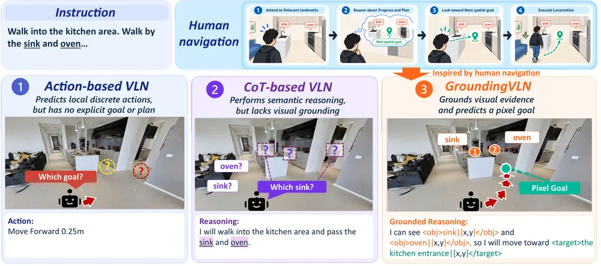
LEAP: Learning Emergent Active Perception for Quadruped Navigation
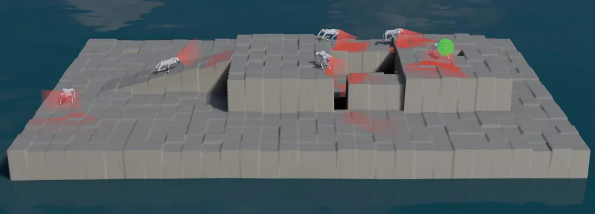
PointZero: 3D Point Track Completion for Learning Transferable 3D Dynamics
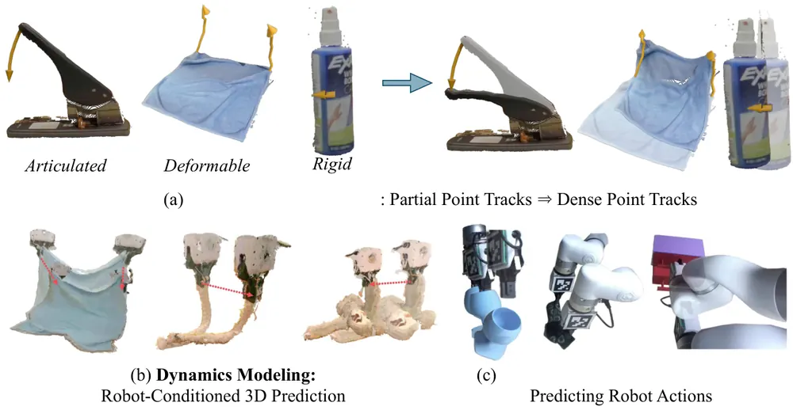
Causal-History Test-Time Scaling for Failure Recovery in Autoregressive World-Action Models
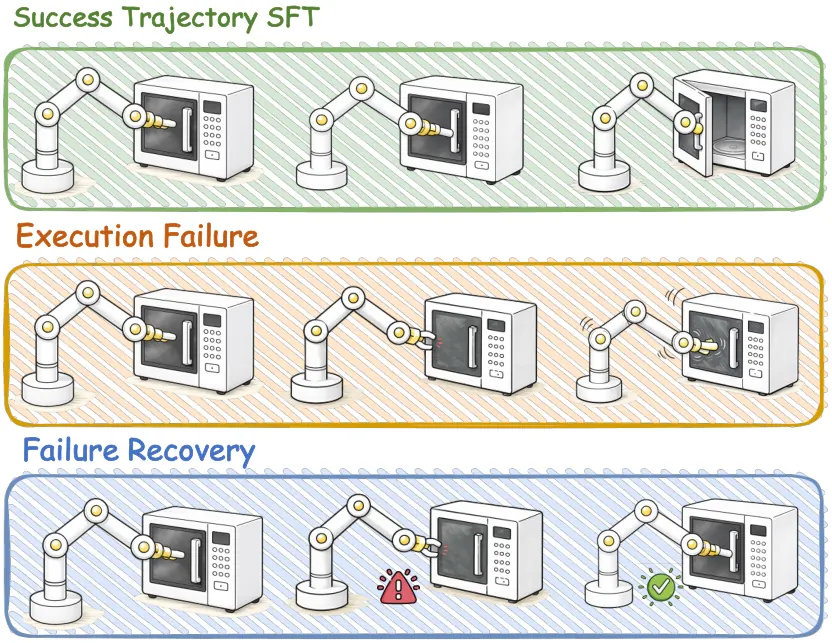
ActiveScale: Scaling Active Perception for Robots across Model, Data, and Hardware
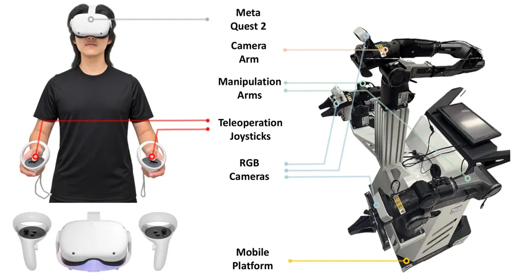
GraphPoint: Semantic Entity Graphs and Point Trajectories for Compositional Robot Manipulation
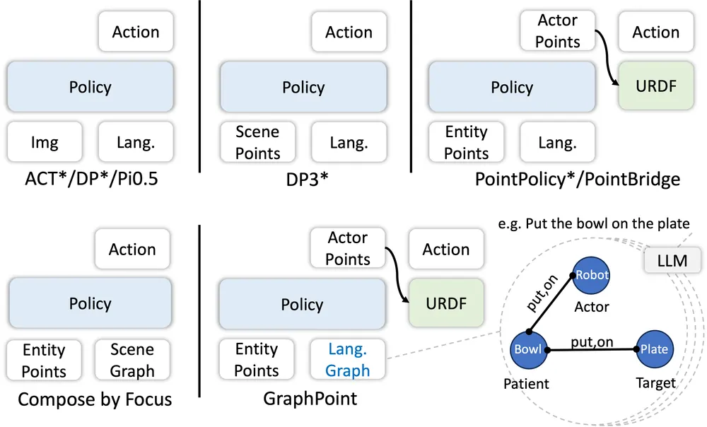
Finder: Agentic Closed-Loop Object Finding for Embodied Grounding
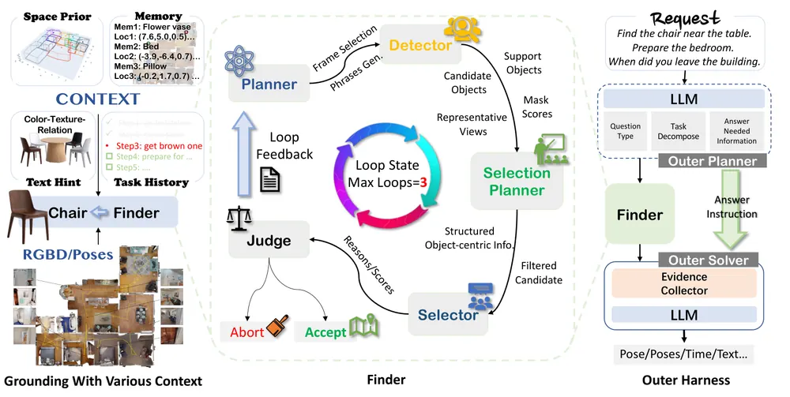
Acting in Meters: Learning Metric Interactions for Precise Robotic Manipulation
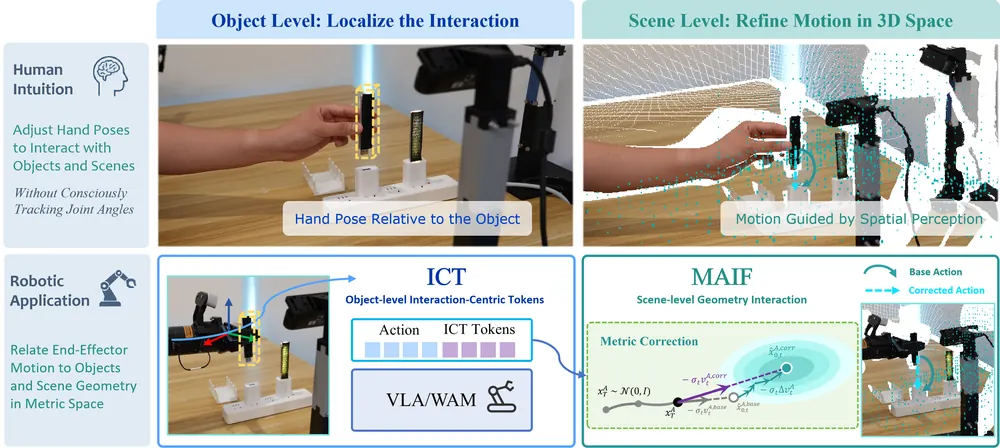
ActionPiece: Rethinking Action Tokenization for Autoregressive Vision-Language-Action Models
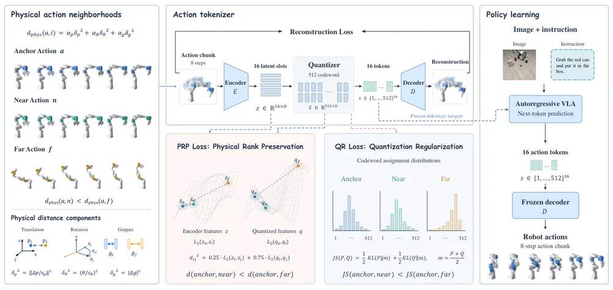
CSWAM: Better Causal Semantic Representations for Out-of-Distribution Generalization in World Action Models
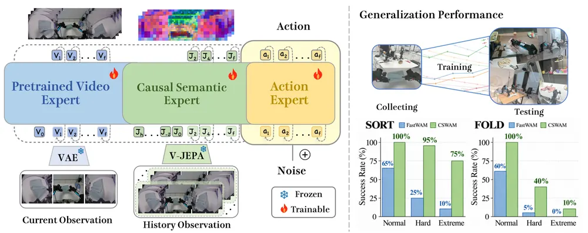
RAFAIL: Relationship-Aware Failure Detection for Robotic Manipulation
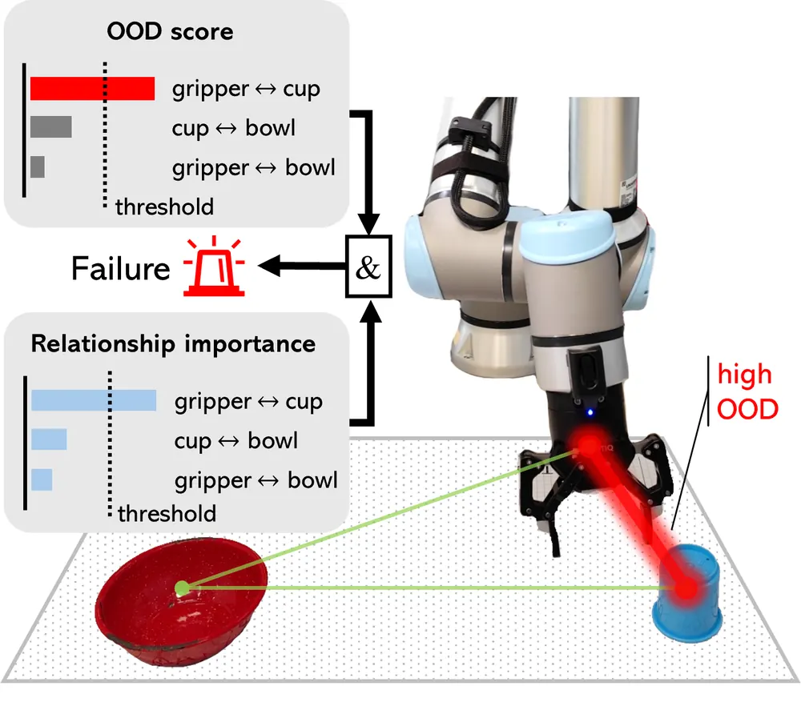
${M}^2$Tok: Multi-head Multi-codebook Discrete Action Tokenization for Vision-Language-Action Models
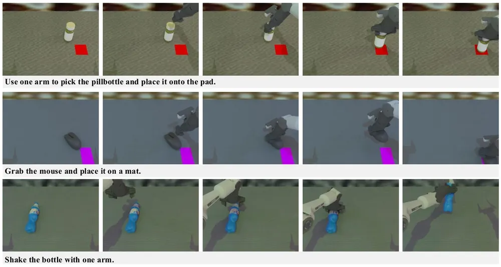
Dreaming the Sound of Contact: Leveraging Video and Audio Generation for Zero-Shot Force-Aware Manipulation and Data Generation
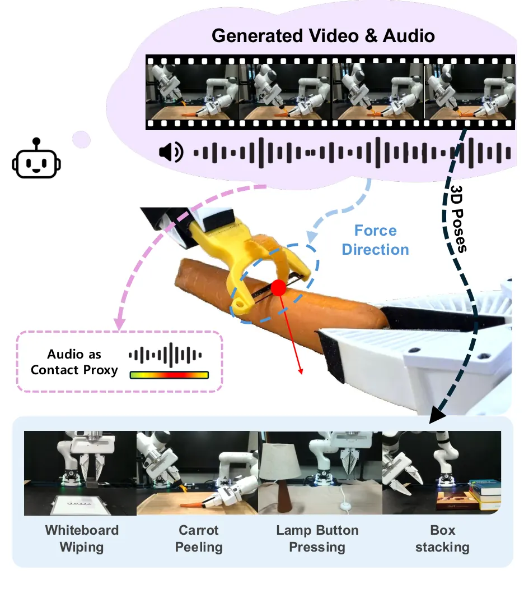
StrucPhysVideo: Learning Physical Dynamics from Structured Captions and Robot Actions
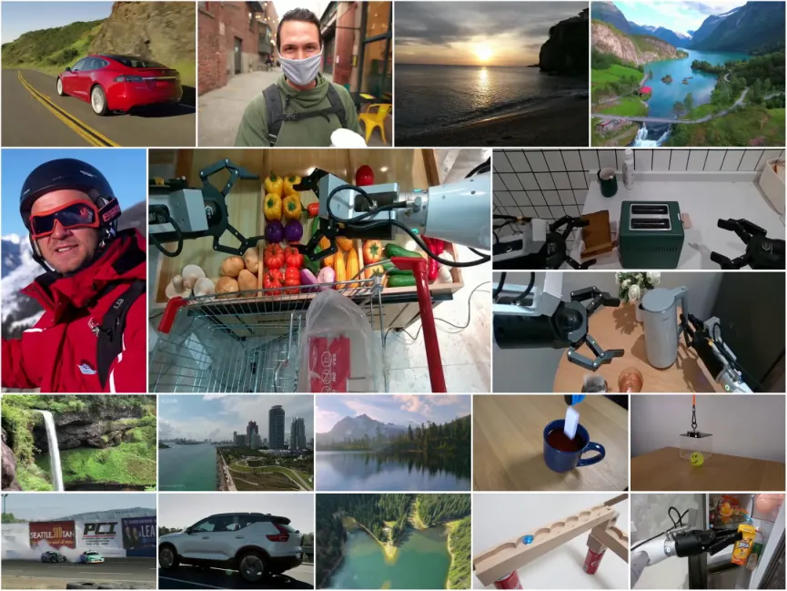
FIERCE: From Generalist Robot Policies to Fast Specialists via Progress-Failure Feedback
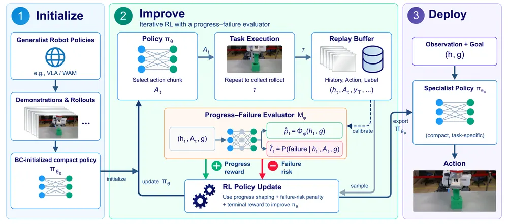
오늘의 핵심 연구 트렌드 종합
- world-action model의 실패·분포 변화 대응 — CSWAM와 Causal-History Test-Time Scaling(FARE) 둘 다 FastWAM·LingBot-VA(observation·action을 하나의 시퀀스로 자기회귀 예측하는 world-action model 계열) 위에서, 재학습 없이 test-time에 OOD 관측이나 실행 실패를 처리하는 방향으로 감. 학습 목표를 바꾸기보다 inference 절차를 바꾸는 쪽이 늘어남.
- action을 관절·latent 공간이 아니라 명시적 geometry로 표현 — Acting in Meters, GraphPoint, PointZero가 각각 metric pose token, entity graph 기반 point trajectory, 3D point track completion으로 action을 명시적 3D 표현에 묶음. VLA의 암묵적 action 표현 한계를 geometry로 보완하려는 흐름이 뚜렷함.
- discrete action tokenizer 재설계 — ActionPiece와 M2Tok 모두 FAST·VQ-VLA 계열 tokenizer의 재구성 오차 문제를 지적하고 각각 rank consistency 보존, multi-head multi-codebook으로 대응함. VLA 성능 개선의 병목이 policy architecture보다 action representation 쪽으로 옮겨가는 신호로 보임.
- failure·progress 신호를 정교하게 나눠 쓰려는 시도 — RAFAIL은 relationship 단위로 OOD를 나눠 실패 탐지 정확도를 높이고, FIERCE는 progress·failure를 동시에 예측해 RL reward shaping의 학습 신호로 씀. 같은 실패 신호를 탐지 정밀화(RAFAIL)와 학습 신호화(FIERCE)라는 다른 목적으로 쓰는 두 갈래가 보임.
- 비디오·오디오 생성 모델을 물리 정보원으로 재해석 — Dreaming the Sound of Contact는 생성 오디오의 접촉음 크기를 force profile로 변환하고, StrucPhysVideo는 구조화 캡션과 MoE 비디오 생성으로 물리 동역학을 학습함. 생성 모델의 출력을 그대로 쓰지 않고 물리량으로 변환하는 접근이 늘어남.
- active perception이 explicit 신호 대 emergent 학습으로 갈림 — ActiveScale은 camera pose를 explicit token으로 넣고 대규모 human data로 mid-training하는 반면, LEAP는 별도 보상 없이 belief map 표현과 지형 커리큘럼만으로 시선 제어를 emergent하게 학습시킴. 같은 문제에 상반된 설계 철학이 공존함.
유망 연구 방향 및 프로젝트 제안
실패 유형별로 causal history를 되돌리지 않고 재작성하는 world-action model recovery - research question: 실행 실패 후 causal KV cache를 어디까지 되돌릴지가 아니라, 실패 원인에 맞는 causal semantic 성분만 골라 재계산하면 recovery가 더 정밀해지는가 - 접근·novelty: FARE의 test-time rollback 시점 선택과 CSWAM의 causal semantic expert를 결합해, "언제 되돌릴지"가 아니라 "무엇을 재계산할지"를 정하는 selective causal editing으로 확장 - 왜 지금·경쟁 prior works: FARE는 되돌릴 시점만 정하고 CSWAM은 관측이 OOD일 때만 개입함. 실패 이후 causal state 자체를 편집하는 연구는 아직 없음 - risk·target venue: world-action model 내부 causal state 편집이 불안정할 위험 있음. RSS·CoRL급, RoboTwin2.0과 실로봇 양쪽 검증 가능
point trajectory·entity graph·metric pose token을 하나의 geometric interface로 통합 - research question: Acting in Meters의 metric pose token, GraphPoint의 entity graph, PointZero의 point track completion을 같은 정책에 함께 넣으면 compositional generalization과 정밀 제어가 동시에 좋아지는가 - 접근·novelty: 세 표현이 각각 전역 관계·개체 역할·점 궤적이라는 다른 층위를 다루므로, policy backbone 앞단에 공통 geometric interface로 합쳐 VLA에 plug-in 형태로 적용함 - 왜 지금·경쟁 prior works: 세 논문 모두 암묵적 action 표현의 한계라는 같은 문제를 서로 다른 표현으로 독립적으로 풂. 통합 시도가 없어 공백임 - risk·target venue: 표현을 합치면 계산 비용과 학습 복잡도가 커짐. CoRL·RSS, LIBERO·CoMani(compositional manipulation 벤치마크)·PGND(point-based geometric neural dynamics 벤치마크)로 비교
relationship 단위 failure 신호를 RL specialization에 직접 연결 - research question: RAFAIL의 relationship-aware failure detector를 FIERCE의 progress-failure evaluator 대신 써서 실패 유형별로 recovery policy를 specialize할 수 있는가 - 접근·novelty: FIERCE는 failure 여부만 risk penalty로 쓰는데, RAFAIL처럼 어떤 relationship(gripper-object 등)에서 실패했는지까지 알면 실패 유형별로 보상 신호를 나눌 수 있음 - 왜 지금·경쟁 prior works: FIERCE는 실패 원인을 구분하지 않고 RAFAIL은 탐지만 하고 학습에는 쓰지 않음. 둘을 잇는 연구가 없음 - risk·target venue: relationship 단위 실패가 다중 원인으로 얽혀 구분이 불명확할 위험 있음. ICRA·CoRL, 실로봇 contact-rich task로 검증
접촉음 기반 force profile을 world model의 예측 대상으로 확장 - research question: Dreaming the Sound of Contact처럼 오디오에서 뽑은 force profile을 실행 시점 신호로만 쓰지 않고, StrucPhysVideo류 world model이 미래 force까지 예측하도록 학습하면 contact-rich task의 planning이 좋아지는가 - 접근·novelty: 현재는 force profile을 실행 신호로만 쓰는데, 이를 world model 상태의 일부로 넣어 rollout 예측 대상에 포함시키는 확장 - 왜 지금·경쟁 prior works: 두 논문 모두 비디오 생성에서 물리량(force, dynamics)을 뽑아내지만 서로 연결하지 않음. force-conditioned world model은 아직 드묾 - risk·target venue: 오디오-force heuristic 매핑이 로봇·물체마다 달라 일반화 한계 있음. CoRL·RSS, tactile perception 커뮤니티와도 연결 가능
explicit pose token 대 emergent belief map, active perception 설계의 정면 비교 - research question: ActiveScale의 explicit camera pose token과 LEAP의 gaze-invariant belief map 중 어느 표현이 unseen embodiment·task에 더 잘 전이되는가 - 접근·novelty: 두 논문이 각각 manipulation과 quadruped navigation이라는 다른 domain에서 검증돼 직접 비교가 없음. 같은 domain에서 두 설계를 controlled comparison으로 검증함 - 왜 지금·경쟁 prior works: active perception 연구가 늘고 있는데(오늘만 두 편) 설계 철학이 갈려 비교 연구의 가치가 큼 - risk·target venue: 두 방법의 학습 세팅(mid-training 데이터 규모, 시뮬레이터)이 달라 공정 비교가 어려움. CoRL, active perception·NBV 벤치마크 필요
오늘 반드시 읽어야 할 논문
- GroundingVLN: Reasoning and Acting with Grounding for Vision-Language Navigation — R2R-CE SR 69.9%를 학습 데이터 0.9%만으로 달성, VLN reasoning-action gap을 다루는 방식이 명확함
- LEAP: Learning Emergent Active Perception for Quadruped Navigation — 별도 보상 없이 active perception이 emergent하게 나타남을 보여, active perception 설계 논쟁에 중요한 반례임
- Causal-History Test-Time Scaling for Failure Recovery in Autoregressive World-Action Models — failure recovery를 causal KV cache 문제로 재정의한 formulation 자체가 새로움
- PointZero: 3D Point Track Completion for Learning Transferable 3D Dynamics — action label 없는 pretraining objective로 3D dynamics 표현을 학습하는 방식이 object-centric 3D representation 연구와 직결됨
- ActiveScale: Scaling Active Perception for Robots across Model, Data, and Hardware — real-world active-perception task 5개 평균 성공률을 30.0%에서 70.0%로 끌어올린 전용 하드웨어·데이터 스케일업 사례임
- GraphPoint: Semantic Entity Graphs and Point Trajectories for Compositional Robot Manipulation — compositional generalization을 위한 semantic entity graph 표현이 scene graph 연구와 바로 연결됨
- CSWAM: Better Causal Semantic Representations for Out-of-Distribution Generalization in World Action Models — world-action model의 OOD 취약점을 causal semantic expert로 보완하는 구조가 world model 연구에 참고할 만함
- Dreaming the Sound of Contact — 생성 오디오를 force profile로 바꾸는 아이디어가 참신하고 contact-rich task 성공률을 20.0%에서 90.0%로 크게 끌어올림
전체 1차 스크리닝 결과 (470편, 점수순) 펼치기
| # | 제목 | 점수 | 🤖 | 분야 | 한 줄 근거 |
|---|---|---|---|---|---|
| 1 | CSWAM: Better Causal Semantic Representations for Out-of-Distribution Generalization in World Action Models | 68 | 9 | World Model | FastWAM에 V-JEPA 기반 causal semantic expert를 더해 분포 변화에 강한 world action model을 만든 연구임. world model·causal reasoning 우선주제에 정확히 맞고 RoboTwin과 실로봇 두 과제 모두에서 성공률을 크게 높임(예: 10%에서 45%로). |
| 2 | Causal-History Test-Time Scaling for Failure Recovery in Autoregressive World-Action Models | 68 | 9 | World Model/Failure Recovery | 자기회귀 world-action model의 실패를 인과적 히스토리 재구성 문제로 정식화하고 훈련 없이 언제·어디를·어떻게 복구할지 세 단계로 나눈 프레임워크임. world model, 실패감지·회복, test-time scaling까지 우선주제 다수를 직접 다루고 시뮬레이션·실로봇 모두에서 검증함. |
| 3 | Acting in Meters: Learning Metric Interactions for Precise Robotic Manipulation | 68 | 9 | VLA | action과 object/scene geometry를 공통 metric scale에서 잡아주는 interaction 표현을 제안하고 여러 VLA/WAM baseline에 붙여 실로봇까지 성능 개선을 보임 |
| 4 | ActionPiece: Rethinking Action Tokenization for Autoregressive Vision-Language-Action Models | 67 | 9 | VLA | reconstruction MSE가 놓치는 action 간 상대적 거리 순서를 physical rank consistency로 정의하고 이를 보존하는 tokenizer로 LIBERO 94.8% 등 강한 성능을 보임 |
| 5 | GroundingVLN: Reasoning and Acting with Grounding for Vision-Language Navigation | 66 | 9 | Navigation | visual grounding을 추론과 행동의 공통 인터페이스로 써서 픽셀 목표를 예측하고 학습데이터 0.9%만으로 R2R-CE 69.9% SR을 달성하며 타 데이터셋 일반화도 강함 |
| 6 | RAFAIL: Relationship-Aware Failure Detection for Robotic Manipulation | 65 | 9 | Manipulation | failure data 없이 task-relevant relationship 기반 OOD로 실행 실패를 탐지해 실로봇 3개 task에서 강한 baseline 대비 우수한 balanced accuracy를 보임 |
| 7 | ActiveScale: Scaling Active Perception for Robots across Model, Data, and Hardware | 65 | 9 | VLA | camera pose 토큰과 대규모 egocentric mid-training으로 VLA에 active perception을 부여하고 전용 teleoperation 플랫폼까지 함께 구축함 |
| 8 | ${M}^2$Tok: Multi-head Multi-codebook Discrete Action Tokenization for Vision-Language-Action Models | 64 | 9 | VLA | action tokenizer의 discretization bottleneck을 multi-head multi-codebook 구조로 줄여 재구성 오차와 정책 성공률을 함께 개선함 |
| 9 | GraphPoint: Semantic Entity Graphs and Point Trajectories for Compositional Robot Manipulation | 63 | 9 | Manipulation | semantic entity graph와 gripper point trajectory를 결합해 subtask 내외 compositional generalization을 다루고 전용 벤치마크 CoMani를 함께 제안함 |
| 10 | PointZero: 3D Point Track Completion for Learning Transferable 3D Dynamics | 62 | 9 | World Model | 로봇 행동 라벨 없이 웹 비디오로도 학습 가능한 3D point track completion을 pretext task로 사용함. action-conditioned dynamics와 imitation learning에 전이시켜 world model 우선주제에 부합하고 실제 로봇 조작 6/7 과제에서 baseline을 능가함. |
| 11 | FIERCE: From Generalist Robot Policies to Fast Specialists via Progress-Failure Feedback | 62 | 9 | RL | progress와 failure를 함께 예측하는 evaluator로 generalist policy를 소형 specialist로 정제하며 dense reward나 target 시뮬레이터 없이 실로봇 contact-rich task를 학습함 |
| 12 | Dreaming the Sound of Contact: Leveraging Video and Audio Generation for Zero-Shot Force-Aware Manipulation and Data Generation | 62 | 9 | Manipulation | 생성된 비디오의 접촉음 크기로 시간에 따른 목표 force 프로파일을 만들고 실로봇 force regulator로 추적해 kinematic-only 방식이 실패하는 contact task를 성공시킴 |
| 13 | Finder: Agentic Closed-Loop Object Finding for Embodied Grounding | 62 | 8 | Embodied AI | 언어로 지정된 물체를 능동적으로 탐색하는 closed-loop grounding 프레임워크임. active perception·embodied grounding 우선주제에 정확히 부합하고 Habitat와 실제 RGB-D 환경 모두에서 성공률 개선을 뚜렷하게 보임. |
| 14 | StrucPhysVideo: Learning Physical Dynamics from Structured Captions and Robot Actions | 62 | 8 | World Model | 물리 중심 데이터 큐레이션과 언어·행동 조건화를 결합한 video world model임. 로봇 end-effector 명령으로부터 결과를 예측하는 interactive 버전까지 제시해 world model·robot action 우선주제에 정확히 부합함. |
| 15 | LEAP: Learning Emergent Active Perception for Quadruped Navigation | 62 | 8 | Active Perception/Navigation | 명시적 보상 없이 과제 압력만으로 능동적 시선 제어가 창발함을 보인 사족보행 내비게이션 연구임. 스크립트 방식 74.2퍼센트, 수동지각 34.5퍼센트 대비 92.7퍼센트 성공률로 능동지각 우선주제에 정확히 부합하고 사족보행 시뮬레이션 전이까지 검증함. |
| 16 | Missing Bridges: Composition-Aware Active Imitation Learning | 62 | 8 | Manipulation | start-goal 연결성 증가를 기준으로 시연을 요청하는 active imitation learning(AALT)으로 시뮬레이션 UR5e 72개 과제를 시연 3개만으로 100% 성공시킴(기존 최강 baseline은 20개 시연으로 88.6%). composable skill을 latent topology로 조직화하는 새로운 문제 설정이며 manipulation·skill chaining과 직접 관련되나 시뮬레이션 단일 도메인 검증에 그침. |
| 17 | Changepoint-Aware World Models: Detecting Dynamics Shifts and Recovering by Forgetting Stale Replay in Model-Based RL | 62 | 7 | World Model | 로봇 동역학이 갑자기 바뀔 때 예측오차 기반 CUSUM으로 감지하고 오래된 replay만 선택적으로 지우는 world model 기법임. world model과 변화 감지·회복을 동시에 다뤄 우선주제와 직접 맞닿으나 시뮬레이션 로코모션 두 시프트에서만 검증됨. |
| 18 | Locating Hidden Failures Makes Long-Horizon Agents More Reliable | 62 | 4 | Agent Failure Detection | 롱호라이즌 에이전트의 실패 지점을 찾는 문제를 정식화하고 4B verifier로 실패 첫 지점 탐지 성능을 크게 높인 연구임. 실패감지·회복 우선주제와 직접 연결되지만 로봇이 아닌 SW 에이전트 대상임. |
| 19 | WeaveRL: Weaving Reconstruction into Scene-Aware Fabrics for Perceptive Reinforcement Learning | 61 | 9 | Manipulation | 수천 개 병렬 시뮬레이션에서 GPU로 surfel 장면을 재구성해 fabric 기반 RL 정책이 손수 지정한 형상이 아닌 센서 기반 형상 위에서 학습되게 하고 미지 장애물 성공률을 35%에서 61%로 높임 |
| 20 | PASSAGE: Scaling Scene-Aligned Motion Learning for Perceptive Humanoid Traversal in Cluttered Environments | 61 | 8 | Humanoid Locomotion | VR·모션캡처로 100시간 규모 인간 이동 데이터를 모아 flow-matching planner와 perceptive tracker를 학습시켜 스킬 라벨 없이도 휴머노이드 장애물 통과 성공률을 크게 높임 |
| 21 | Function-Preserving Data Generation for Zero-Shot Real-to-Sim-to-Real Manipulation | 60 | 9 | Manipulation | contact-rich task에서 형상 다양성과 물리적 유효성을 동시에 지키는 real-to-sim-to-real 데이터 생성법을 제안하고 zero-shot 실로봇 전이를 보임 |
| 22 | Track, Articulate, Act: Generating Articulation from Casual Human Videos | 60 | 8 | Manipulation | 캐주얼한 단안 인간 영상에서 3D point track만으로 관절체 구조와 손-물체 상호작용을 복원해 MuJoCo에서 재현하는 real-to-sim 프레임워크임. 로봇 데모 없이도 조작 가능한 관절체 자산을 만든다는 점에서 manipulation·3D representation 우선주제에 강하게 부합함. |
| 23 | Not All Layers Need Tuning: Diagnosing and Directing Adaptation in Vision-Language-Action Models | 60 | 8 | VLA | 5개 VLA 아키텍처에서 시프트 유형별로 어느 영역을 얼마나 튜닝해야 하는지 파인튜닝 없이 진단하는 파이프라인임. 실기 xArm-7에서 전체 파인튜닝 대비 0.04퍼센트 파라미터로 동등 성능을 냈고 미학습 장면에서도 모든 baseline을 능가함. |
| 24 | WholeBodyWAM: Learning Whole-Body World Action Models with Scalable Motion Priors | 60 | 8 | World Model/Humanoid | 사람·이종 휴머노이드의 4천시간 이상 전신동작 데이터로 사전학습한 후 로봇 액션으로 전이하는 world-action model임. 동작 사전학습 규모를 키울수록 실로봇 성능이 함께 좋아지고 적은 시연으로도 데이터효율을 높여 generalist policy 방향에 부합함. |
| 25 | Reinforcement Learning for Real-Time Vision-Language-Action Policies | 60 | 8 | VLA/RL | 크고 느린 VLA가 제안한 행동청크를 가볍고 빠른 편집정책이 최신 관측에 맞춰 실시간 수정하는 구조로 강화학습 파인튜닝의 지연 문제를 해결한 연구임. 실기 4개 동적 과제에서 성공률을 42퍼센트에서 97퍼센트로 끌어올림. |
| 26 | Wind on Trees: Testing Physical Grounding in Dynamic 4D Gaussian Splatting | 60 | 5 | World Model | 4D Gaussian Splatting에 damped harmonic oscillator 기반 물리 prior를 넣고 합성 테스트베드로 물리적 grounding 여부를 검증함. object-centric 4D representation·world model 우선주제에 닿아있고, 파라미터 복원이 약하다는 실패 모드까지 정직하게 분석함. |
| 27 | DistAL: Distance-based Advantage Learning for VLA Fine-Tuning | 59 | 9 | VLA | 성공/실패 이진 보상 대신 embedding distance 기반 advantage로 value function 정보량을 높여 실기체 양팔 조작 성공률을 개선함 |
| 28 | TAO-Force: Unifying Force-Aware Perception and Fast-Slow Control for Contact-Rich Manipulation | 59 | 9 | Manipulation | force 신호를 FiLM으로 VLM 표현에 주입하고 접촉 여부에 따라 위치제어와 admittance 제어를 전환하는 fast-slow 구조로 contact-rich task를 실로봇에서 검증함 |
| 29 | Calibrated Probabilistic Obstruction Reasoning with Vision-Language Models for Grasping in Clutter | 59 | 8 | Manipulation | VLM·depth·amodal mask의 obstruction 확률을 보정하고 그래프 분포로 marginalize해 클러터 grasp 의사결정의 불확실성을 다루며 실로봇 77.8% 성공률을 달성함 |
| 30 | AdaGeoVLN: Selective Geometry Across Representation Depth and Navigation Time for Vision-Language Navigation | 59 | 8 | Navigation | geometry foundation model의 여러 층 표현을 정책 단계별로 결합하고 KV state를 예산 내에서 선택적으로 유지해 단일 RGB로 R2R-CE/RxR-CE에서 강한 VLN 성능을 냄 |
| 31 | KINO: A Keyframe Interface for VLM Planning and Whole-Body Control in Humanoid Loco-Manipulation | 59 | 8 | Humanoid | VLM이 선택한 keyframe을 whole-body RL 정책이 추적하는 계층 구조에서 saliency 기반 keyframe 샘플링으로 성공률을 44%에서 92%로 크게 끌어올림 |
| 32 | RoboVAD: A Large Cross-Domain Evaluation Benchmark for Anomaly Detection in Robotic Arm Manipulation Videos | 58 | 8 | Manipulation | 로봇팔 조작 영상의 anomaly detection을 위한 대규모 cross-domain 벤치마크임. failure detection 우선주제에 정확히 부합하고, 모든 baseline이 AUC 70% 미만이라는 결과로 문제의 어려움을 잘 드러냄. |
| 33 | PhysVGGT: Feed-Forward Dense Physical Property Estimation from A Single Image | 58 | 8 | Manipulation | 단일 RGB 이미지에서 마찰·경도·탄성·밀도 등 물리 속성을 픽셀 단위로 한 번에 추정하는 feed-forward 모델임. 로봇 파지·조작에 필요한 물성 추정을 기존 대비 27배 빠르게 수행해 manipulation 우선주제에 직접 부합함. |
| 34 | OpenDexGrasp: Open-vocabulary Task-Oriented Dexterous Grasping | 58 | 8 | Dexterous Manipulation | 자유형식 언어로 기능적 의도를 파악해 어포던스와 grasp을 하나의 잠재공간에서 함께 생성하는 open-vocabulary 손재주 파지 프레임워크임. 대규모 데이터셋과 실로봇 실험으로 미학습 카테고리 일반화까지 검증했고 CoRL 2026 게재예정임. |
| 35 | UMI-Bridge: Action-Anchored Latent Alignment across Human and Robot Manipulation Data | 58 | 8 | VLA/Manipulation | 사람이 손에 쥐고 촬영한 UMI 시연을 중간 도메인으로 사용해 로봇 액션과 사람 동작의 잠재표현을 동작 동등성 기준으로 정렬하는 연구임. 동일한 데이터로 naive co-training 대비 성공률을 73.3퍼센트에서 91.7퍼센트로 높이고 로봇 시연 25퍼센트만으로 풀데이터 baseline을 능가함. |
| 36 | The Automaton Underneath: The Additive Input Pathway Is a Parasitic Attractor for State Tracking in Householder Linear RNN | 58 | 1 | Sequence Model/Interpretability | 선형RNN의 길이일반화 실패 원인을 사전등록 인과실험으로 규명하고 additive input pathway를 제거하면 정확한 automaton이 학습됨을 보인 연구임. 메커니즘 해석 연구로 매우 꼼꼼하나 로보틱스와는 무관함. |
| 37 | DetAug: Obstacle-Blind Trajectory Augmentation for Zero-shot Obstacle Avoidance | 57 | 8 | Manipulation | 장애물 정보 없이 transit phase만 증강하고 추론 시 label을 샘플링해 최저 충돌비용 경로를 고르는 방식으로 zero-shot 장애물 회피에서 큰 폭 개선을 보임 |
| 38 | InterMASH: A Unified Geometric Representation for Grasp Synthesis | 57 | 8 | Manipulation | sphere-fixed anchor와 spherical harmonics로 사람 손과 로봇 손을 아우르는 공통 grasp 표현을 만들고 diffusion transformer로 grasp를 생성함 |
| 39 | From Gameplay to Policy: Towards Scalable Robot Data Collection via Gamified Robot-Free Interaction | 57 | 8 | Manipulation | VR 게임 플레이로 로봇 없이 조작 데이터를 모으고 embodiment-invariant affordance로 소수의 실로봇 데모만으로 정책을 전이하는 새로운 데이터 수집 패러다임을 제시함 |
| 40 | Learning Holistic Whole-Body Loco-Manipulation with a Bipedal Mobile Manipulator | 57 | 8 | Loco-Manipulation | 6자유도 end-effector 목표만으로 이족 로봇의 팔다리 균형을 통합 조율하는 whole-body RL 컨트롤러로 실로봇에서 다양한 상위 명령원과 연동 검증함 |
| 41 | M$^3$P-R1: Reinforcement Learning for Large Language Model Guided Multi-Modal Motion Planning via MIP Code Generation | 57 | 7 | Motion Planning | LLM을 RL로 미세조정해 이산-연속이 섞인 multi-modal planning을 solver 검증 가능한 MIP 코드로 생성하게 하는 새로운 조합 방식임 |
| 42 | FIVE-VLA: Fast and EffectIVE Autonomous Driving with Recurrent Action Memory | 56 | 8 | VLA | 고해상도 이미지를 98토큰으로 압축하고 recurrent action memory로 시간 맥락을 준 자율주행 VLA임. VLA 우선주제에 부합하며 Bench2Drive에서 기존 대비 경로 완주율을 약 10%p 높임. |
| 43 | DeformSmith: Physics Harness-Guided Hierarchical Generation of Deformable Assets for Robot Manipulation | 56 | 8 | Manipulation | text/이미지에서 물리적으로 타당한 변형체 asset을 계층적 agent가 생성·검증·정제하며 로봇 상호작용으로 루프를 닫는 프레임워크임 |
| 44 | In-Context Robot Learning with VLM Agents | 55 | 9 | VLA | 상용 VLM 에이전트가 gradient update 없이 시연·피드백만으로 로봇 행동을 생성하는 in-context 로봇 학습 프레임워크임. 실로봇 실험까지 수행해 VLA·test-time adaptation 우선주제에 정확히 부합함. |
| 45 | ForceDelta-VLA: Distilling Force-Conditioned ActionCorrections for Contact-Rich Manipulation | 55 | 8 | Manipulation/VLA | 힘 조건부 VLA의 출력을 기준 행동과 접촉 보정으로 분리해 보정만 경량 정책이 담당하도록 지식증류한 프레임워크임. 9개 단일팔·양팔 접촉과제에서 성공률을 54.4퍼센트에서 82.2퍼센트로 높이고 접촉힘도 26퍼센트 낮춤. |
| 46 | ForwardDLO: Model-Based Bimanual Shape Matching of Unconstrained Deformable Linear Objects | 55 | 8 | Manipulation | 구속 없는 양팔 로프 조작을 위한 recurrent latent dynamics 모델로 저비용 batched 예측을 활용해 routing task 성공률을 baseline 대비 크게 높임 |
| 47 | DSD: Learning Diverse and Reusable Motor Skills via Diffusion Skill Discovery | 55 | 7 | RL | diffusion 모델로 상태 분포의 entropy gradient를 근사해 고차원 humanoid 제어에서 더 다양한 재사용 가능 motor skill을 발견하는 기법임. skill chaining·RL 우선주제에 부합함. |
| 48 | Vision-Language Grounded Task-Context-Aware Imitation Learning for Robotic Disassembly | 55 | 7 | Manipulation/Imitation Learning | 언어로 과제 맥락을 부여해 장기 분해작업의 스킬 선택 모호성을 줄인 모방학습 프레임워크임. 기존 diffusion policy 대비 35퍼센트포인트, 이전 task-context baseline 대비 75퍼센트포인트 성공률을 높이고 물체 주석 없이 다양한 커넥터 형상에 일반화됨. |
| 49 | RAF-VLA: Representation Alignment with the Future for End-to-End Autonomous Driving | 55 | 7 | VLA/World Model | 미래 프레임을 명시적으로 생성하지 않고 표현정렬만으로 world modeling 이점을 얻는 자율주행 VLA임. NAVSIM에서 적은 학습샘플로도 SOTA급 planning 성능을 내면서 학습비용 3.8퍼센트, 추론지연 1밀리초 수준으로 부담을 없앤 점이 실용적임. |
| 50 | Learning Multi-Humanoid Pickup and Transport via Decentralized Object-Centric Control | 55 | 7 | Manipulation/Multi-robot | 물체 위 로컬 부착영역을 공유하는 탈중앙 object-centric 제어로 단일·협력 파지·핸드오버를 하나의 추상화로 통합한 연구임. 단일로봇 학습 정책이 협력 상황에도 상당 부분 전이되고 실기 sim-to-real까지 검증함. |
| 51 | Map2Route: Benchmarking Compositional Language-Grounded Route Planning over Semantic Maps | 55 | 7 | Navigation/VLN | 관계·비교·중첩 표현이 섞인 복합 언어지시 기반 경로계획 벤치마크와 코드 기반 grounding 방법을 함께 제시한 연구임. 사람 시연과의 격차가 여전히 크다는 점을 보여 향후 연구 여지를 명확히 제시함. |
| 52 | Online Robust Reinforcement Learning Through Monte-Carlo Planning | 55 | 5 | RL/Planning | 시뮬레이터와 실제 동역학의 불일치를 견디는 robust MCTS를 제안하고 수렴률까지 증명한 연구임. sim-to-real 격차 문제에 이론적 해법을 제공해 로봇 planning에 참고 가치 있음. |
| 53 | Rethinking Critic Learning in PPO: Understanding and Mitigating Value Flattening | 55 | 3 | RL | PPO critic이 실제 가치 변화보다 평평하게 예측하는 실패모드를 규명하고 소수 상태만 지도하는 방법으로 해결한 연구임. PPO 전반에 적용 가능해 로봇 RL 학습에도 참고 가치 있음. |
| 54 | Label-free steering: Compressing test-time reinforcement learning into bias-only subspaces | 55 | 2 | Test-Time Optimization | 다수결 pseudo-label만으로 bias 파라미터 10만개만 최적화해 test-time RL 효과를 내는 기법임. 파라미터를 76000배 줄이면서 성능을 유지해 test-time optimization 우선주제와 연결됨. |
| 55 | Reaching Every Position Without Searching: Rotating Sparse Wiring on the Hypercube as a Substitute for Attention | 55 | 0 | Architecture(LG) | 시퀀스 위치를 hypercube로 보고 레이어마다 회전하는 고정 sparse 연결로 attention을 대체하는 새 아키텍처임. 언어모델링에서 정확도를 유지하며 파라미터·연산을 크게 줄여 새로운 원리를 제시함. |
| 56 | The evolution of sex for artificial intelligence: a population-genetic framework for multigenerational model populations | 55 | 0 | Theory/Generative Model | 모델 세대 간 재학습·병합 과정을 집단유전학 틀로 재해석한 독창적 이론 논문임. 여러 아키텍처와 LLM에서 일관되게 검증되어 개념적 신규성이 크지만 로보틱스와는 무관함. |
| 57 | How Model Growth, Recursion, and Boundary Operators Influence Scaling Exponents | 55 | 0 | Scaling Laws | looped transformer의 재귀 깊이를 학습 중 늘리는 model growth로 스케일링 지수 자체를 바꿀 수 있음을 보인 연구임. 7.4B 모델이 20배 적은 연산으로 GPT-3 13B급 성능을 내는 구체적 수치가 있어 임팩트가 큼. |
| 58 | RecMorph: Topology-Guided Spatial Recurrence for Generalized Morphology Control | 54 | 7 | RL | topology-guided recurrent 구조로 cross-limb 통신을 처리해 morphology 일반화와 실기체 quadruped 전이까지 보였으나 VLA 핵심 주제와는 거리가 있음 |
| 59 | CaSCo: Cascade-Aware Soft-Collision Motion Planning | 54 | 7 | Motion Planning | VLM이 물체별 의미론적 위험을 매기고 물리 시뮬레이터가 연쇄 충돌 결과를 예측해 이를 최소화하는 경로를 찾는 cascade-aware soft-collision planning을 제안함 |
| 60 | REVERSAL-BENCH: A Reversibility Axis and Reset Oracle for Measuring the Reset-Free RL Cliff | 52 | 8 | RL | reset-free RL이 비가역 상태에 흡수되는 현상을 연속 가역성 파라미터와 reset oracle로 정량화한 벤치마크임. 실제 조작에서 되돌릴 수 없는 상황을 다룬다는 점에서 manipulation·RL 우선주제에 정확히 부합함. |
| 61 | TacBPM: A Tactile-conditioned Behavior Prior Model for Dexterous Reorientation | 52 | 8 | Dexterous Manipulation/Tactile | 촉각-고유수용감각 이력에 조건화된 잠재 행동 사전모델을 여러 구체 형태에서 증류해 손재주 재정향 정책의 탐색 부담을 줄인 연구임. 새로운 물체 기하와 미학습 배치에서도 실기 전이에 성공함. |
| 62 | Human-Centric Grasp State Assessment: Toward Transferring Subjective Evaluation to Robots | 52 | 7 | Manipulation/Tactile Perception | VLM으로 사람의 주관적 파지 평가 기준을 소수 인간 라벨만으로 로봇에 전이하는 프레임워크임. 변형가능 물체 3종과 사용자 25명 평가로 검증했고 촉각·힘 기반 온라인 적응까지 포함해 매니퓰레이션·촉각지각 우선주제에 부합함. |
| 63 | Fetch My Beer: Synthetic-to-real Hierarchical Policy for Smooth Pick-and-place | 52 | 7 | Manipulation | 액체 용기의 흔들림·유출을 억제하는 안정적 운반을 위한 synthetic-to-real 계층형 diffusion 정책임. 물리시뮬레이션 검증 데이터 파이프라인과 잠재공간 diffusion 제어기를 결합해 기존 매니퓰레이션 정책 대비 안정성에서 우위를 보임. |
| 64 | OmniRisk: Omnidirectional Trajectory-Risk Learning for Agile Quadrotor Dynamic Avoidance | 52 | 7 | Navigation/Planning | 라이다 파노라마와 동적 마스크, 속도장을 결합해 궤적 단위 위험을 오프라인 학습하고 온라인에서는 단일 순전파로 회피 궤적을 고르는 쿼드로터 회피 프레임워크임. 실비행에서 상대속도 15m/s의 연속 회피 기동을 파인튜닝 없이 시연함. |
| 65 | WetRobo: A Reproducible Robot Kit for Coding Agents in Biological Laboratories | 52 | 7 | Manipulation | VLA 정책은 실험실이 바뀌면 성능이 떨어지는 반면, 코딩 에이전트가 현장에서 직접 프로그램을 작성해 적응하는 로봇 키트(WetRobo)는 두 실험실 모두에서 성공함(뚜껑 여는 과제 등, 실물 로봇). VLA의 일반화 한계를 코딩 에이전트로 우회하는 실용적 대안을 실제 로봇 두 곳에서 보였으나 과제 3개, 정성적 비교에 그침. |
| 66 | Zing-0.5: Toward Playable Worlds with Real-Time Joint Action and Text Control | 52 | 4 | World Model | 5B 규모 world model로 키보드·텍스트를 함께 조건화한 실시간 상호작용 세계 생성 모델임. world model 우선주제에 해당하지만 게임 환경 중심이라 로봇 조작 검증은 없음. |
| 67 | Agora: Git as Shared Memory for Collective AutoResearch | 52 | 0 | AI(Autoresearch) | 여러 LLM 에이전트가 git 기반 공유 메모리로 연구를 축적하는 collective autoresearch 시스템임. 새로운 협업 연구 패러다임 제안이 흥미롭지만 로보틱스와는 무관함. |
| 68 | Capability Emergence Can Be Forecast: Per-Seed, In Advance, With Calibrated Intervals, Certified False Alarms, and a Blind Pre-Registered Gate | 52 | 0 | Science of DL | grokking과 소형 언어모델에서 능력 emergence 시점을 사전등록된 방식으로 정량 예측한 연구임. 방법론적 엄밀함이 돋보이나 로보틱스와는 무관함. |
| 69 | VLA-ULAP: Interleaving Cloud VLA Calls with Ultra-Lightweight Local Action Prediction at the Edge | 51 | 8 | VLA | cloud VLA 호출과 초경량 local action predictor를 번갈아 써서 호출횟수와 에너지를 크게 줄이면서도 성공률을 대부분 유지하는 엔지니어링 최적화 논문임 |
| 70 | TRACER: Adaptive Multi-Robot Social Navigation via Joint Human-Response Prediction and Interaction-Aware Replanning | 51 | 7 | Navigation | 다중 로봇의 개별·상호작용 효과를 분리해 예측하고 관측된 반응으로 belief를 갱신하며 재계획하는 사회적 내비게이션 프레임워크임 |
| 71 | Decoupling Vision, Language, and Action for Efficient Multi-Task Robot Policies | 50 | 8 | VLA | vision/language encoder를 고정 VLM 대신 경량 조합으로 바꿔도 성공률은 유지하며 추론속도·에너지를 크게 줄인다는 통제 실험이나 새 학습 패러다임은 아님 |
| 72 | Adaptive-MHE : A Sampling-Based Adaptive MPC for Legged Loco-Manipulation via Moving Horizon Estimation | 50 | 7 | Loco-manipulation/Control | moving horizon estimation으로 물체·지형 물성치를 온라인 추정해 샘플링 기반 MPC와 결합한 다리+조작 적응 제어 프레임워크임. 실기 실험에서 ground-truth 파라미터를 아는 controller 수준의 성능을 달성함. |
| 73 | Prior Evolution and Task Alignment for Aerial Grasping | 50 | 7 | Aerial Manipulation | 공중 파지 궤적 최적화가 초기값에 민감한 문제를 최적화된 궤적으로부터 사전분포를 학습하고 CEM으로 진화시키는 방식으로 보완한 연구임. 접촉·이륙·완료 결과로 학습한 critic을 미분가능한 비용으로 재사용해 시뮬레이션과 실기 모두에서 성능을 높임. |
| 74 | LUMO: Designing Luminous Contact Morphology for Repeatable Whole-Finger Contact Observation | 50 | 7 | Tactile Sensing | 손가락 내부 LED와 실리콘 패드 변형으로 접촉 위치를 광학적으로 읽어내는 촉각센서 구조를 역학·광학 동시 최적화로 설계한 연구임. 접촉위치 추정을 결합해 힘 측정 오차를 1.44N까지 낮춰 촉각지각 우선주제에 부합함. |
| 75 | WAVE-Go: World-Model Navigation with Adaptive Execution for Wheel-Legged Robots | 50 | 7 | World Model/Navigation | world model 기반 미래 예측과 실행 가능한 명령 선택을 분리해 관측이 예측을 무효화하면 즉시 중단하는 휠-레그 로봇 내비게이션 프레임워크임. 분포내·동적 분포외 성공률 모두에서 기존 대비 개선하고 충돌률도 낮춤. |
| 76 | Approximating High Dimensional Self-Motion Manifolds via Deep Generative Models | 50 | 6 | Manipulation/Kinematics | 중복자유도 매니퓰레이터의 self-motion manifold를 곡선이 아닌 조건부 사후분포의 지지집합으로 재정의해 생성모델로 샘플링하는 연구임. 7자유도 팔에서 4차원 self-motion manifold를 근사한 최초 사례라는 점이 신규성 있음. |
| 77 | Structural Inference under Hidden Agents | 50 | 3 | Multi-agent/World Model | 일부 에이전트 경로가 관측되지 않을 때 상호작용 구조와 숨은 경로를 동시에 복원하는 문제를 새로 정식화함. motion-capture 가림 실험으로 검증해 멀티에이전트 동역학 추론에 참고 가치 있음. |
| 78 | Double descent is the principle of least action | 50 | 0 | Theory | double descent 현상을 통계역학의 최소작용 원리로 설명한 이론 논문임. 학습 동역학에 새로운 물리적 해석을 제공하지만 로보틱스와는 무관함. |
| 79 | Gated Residual Body-Hand Coordination for Whole-Body Humanoid Teleoperation | 49 | 7 | Humanoid Teleoperation | 동작 추적과 손 리타겟팅 모듈을 고정한 채 gated residual 보정을 얹어 몸-손 기하 오차를 줄이는 실용적 개선이나 새로운 학습 패러다임은 아님 |
| 80 | Loco-Loco-RL: Low-Cost Terrain Mapping for Humanoid Locomotion with Reinforcement Learning | 49 | 7 | Locomotion | 저가 ToF 센서의 희소 지형 정보를 토큰 압축 temporal transformer로 처리해 sim-to-real 휴머노이드 지형 보행을 달성함 |
| 81 | Active perception for robotic harvesting: 3D reconstruction and localisation of tomatoes hidden within clusters in a Mediterranean greenhouse | 48 | 7 | Active Perception | 온실 토마토 클러스터의 가려진 열매를 NBV active planning과 클러스터링으로 재구성·위치추정하는 응용 연구로 방법론 자체는 기존 기법 조합임 |
| 82 | DRT&R: Direct Radar Teach & Repeat | 48 | 6 | Navigation/Localization | 레이더 스캔 전체를 직접 사용하는 teach & repeat 내비게이션 스택으로 온로드·오프로드 모두에서 SOTA 위치추정을 달성한 연구임. 344km 온로드, 20km 오프로드 실주행 검증으로 실증 강도가 높음. |
| 83 | HINT-Plan: Human Intention-Aware Robot Task Planning in Context-Rich Environments using Vision Language Models | 48 | 6 | Task Planning/HRI | VLM으로 사람의 상위수준 의도를 예측해 로봇 과제계획에 반영하는 프레임워크임. 포토리얼리스틱 시뮬레이션에서 69.71퍼센트 성공률로 기존 대비 최대 35.29퍼센트포인트 개선했으나 실로봇 검증은 없음. |
| 84 | CANTABILE: Learning Expressive Dynamics for Robotic Piano Performance | 48 | 6 | Dexterous Manipulation/Bimanual | 로봇 피아노 연주에서 그동안 평가되지 않던 음악적 다이내믹스를 목표속도 조건화와 세기 보상으로 다루는 프레임워크임. Velocity F1을 0.06에서 0.34로 높였고 세기 제어를 재학습 없이 런타임에 조절 가능하게 함. |
| 85 | CapMem: A Benchmark for Caption-Based Episodic Memory in Egocentric Video | 48 | 5 | Video | 긴 egocentric video에서 자막(caption)을 재사용 가능한 episodic memory로 써서 VideoQA보다 나은 성능을 보임. wearable 환경의 memory 문제라 robot memory·egocentric perception 연구와 연결 지점이 있음. |
| 86 | Reliable Virtual Sensing: A Multi-Domain Benchmark for Robustness Under Sensor Failures | 48 | 4 | Robustness/Sensing | 센서 고장에 대한 강건성을 다도메인에서 평가하는 첫 벤치마크임. 모든 모델이 고장 상황에서 크게 저하된다는 실증 결과가 cyber-physical 시스템의 실패 대응 문제와 맞닿아 있음. |
| 87 | Walking the Score Manifold: Continuous-time Generative Dynamics on Learned Data Manifolds | 48 | 2 | Video | 사전학습된 score 모델로 연속시간 생성 동역학을 학습하는 새 formulation임. video·분자동역학에 적용했고 로보틱스 응용은 없음. |
| 88 | Compiled Agency: Frontier General-Purpose Coding Agents Build Winning Game Players from Bare Interaction - from Flappy Bird to StarCraft II and Civilization | 48 | 2 | AI | 게임 설명과 빈 정책 파일만 주면 코딩 에이전트가 스스로 StarCraft II 내장 AI를 이기고 Civilization을 완전 정복하는 컨트롤러를 직접 작성함(턴마다 모델 호출 없이). 장기 전략 실행을 모델 호출 없는 실행파일로 컴파일한다는 새 개념(compiled agency)으로 로봇 장기 과업 계획에 시사점이 있으나 로봇 실험은 아님. |
| 89 | One Axis, No Brake: Self-Knowledge Limits the Filtering of Harmful Peer Conformity in LLMs | 48 | 1 | Multi-agent/NLP | 멀티에이전트 LLM 토론에서 유해한 동조를 걸러내는 필터가 결국 모델 자기지식 한계에 갇힌다는 것을 이론적으로 보인 연구임. 집단적 correctness 문제에 통찰이 있으나 로보틱스와는 무관함. |
| 90 | rMuscle: Robotic Muscle Memory for Efficient Vision-Language-Action Model Inference | 47 | 7 | VLA | 반복 작업에서 시각 토큰과 뉴런 활성화 패턴의 실행 간 유사성을 캐싱해 VLA 추론 속도를 1.29-1.42배 높이는 시스템 최적화 논문임 |
| 91 | VLM-MPPI: Grounding Natural Language in Behaviorally Diverse Trajectories for Aerial Navigation | 46 | 7 | Navigation | behavior-conditioned MPPI 후보를 VLM이 FPV 이미지로 선택하는 계층적 UAV 내비게이션으로 실비행 검증은 있으나 방법 자체는 기존 요소의 조합에 가까움 |
| 92 | HAP: A Hand-Driven Active Perception Framework for Egocentric Head Motion Prediction | 46 | 6 | Embodied AI | 손 동작으로부터 미래 머리 motion을 예측하는 active perception 프레임워크임. occlusion 그래프와 인과적 추론을 결합해 active perception 우선주제에 해당하고 egocentric 데이터셋까지 공개함. |
| 93 | CADSplat: Sparse-View 3D Gaussian Splatting Aided by CAD Models for Robust, Photorealistic Digital-Twin Reconstruction | 46 | 5 | 3D Vision | CAD 모델을 3DGS 초기화에 활용해 sparse-view 디지털 트윈을 복원하는 프레임워크임. object-centric 3D 표현 우선주제에 해당하며, 이득의 대부분이 CAD 형상보다 splat 구속 방식에서 온다고 저자 스스로 분석한 점이 정직함. |
| 94 | NormLift: From Lifted Features To Semantic Reliability In 3D Gaussian Splatting | 46 | 5 | 3D Vision | 3D Gaussian에 2D semantic feature를 올릴 때 코사인 정렬 문제로 재정식화해 lifting 공식을 이론적으로 정당화함. feature norm을 신뢰도 신호로 쓰는 open-vocabulary 3D segmentation으로 object-centric 3D·scene understanding 우선주제에 해당함. |
| 95 | Timely Activation of Safety Filters via One-Step Reachability Expansion | 45 | 6 | Safety/Control Theory | 이산시간 제어에서 안전필터가 연속시간 보장을 잃는 문제를 one-step 확장 reachable set으로 해결한 이론적 안전 연구임. HJ reachability 안전필터의 실질적 격차를 메운 기여임. |
| 96 | Feedback-Modulated Harmonic Policies for Quadruped Locomotion | 45 | 6 | Locomotion | 관절 궤적을 커맨드 조건부 푸리에급수로 표현하고 온라인 피드백으로 계수를 조정하는 사족보행 정책 표현임. 실기에서 3.67m/s 속도를 달성했으나 표현방식 변경에 따른 성능이득 크기는 제한적으로 보고됨. |
| 97 | CLASP: A Cluster-Level Autonomous Selective Picking Robot with a Soft Rolling-Band Gripper for Fresh-Market Blueberry Harvesting | 45 | 6 | Agricultural Robotics/Manipulation | 소프트 롤링밴드 그리퍼로 블루베리 군집을 통째로 다루는 선택적 수확로봇임. 실제 밭에서 25개 군집 중 23개(92퍼센트) 수확에 성공했고 저비용 하드웨어로 구현함. |
| 98 | Asymptotically Optimal Multi-Robot Task and Motion Planning | 45 | 6 | TAMP | 다중 로봇 TAMP에서 서로 다른 차원의 transition 구조를 규명하고 점근적 최적성을 보장하는 알고리즘을 제시하나 학습 요소 없는 고전적 planning 이론 논문임 |
| 99 | Exponential Hardness of Off-Policy Evaluation under History-Dependent Logging | 45 | 3 | RL/Theory | history-dependent logging 하에서 off-policy evaluation이 지수적으로 어려워짐을 POMDP 구성으로 증명한 이론 논문임. 로봇 정책 평가에도 적용될 수 있는 근본적 한계를 규명함. |
| 100 | A Geometric Theory of Decision Boundaries in Structured Markov Decision Processes | 45 | 2 | RL/Theory | 정책의 decision boundary 기하구조가 정책복원 복잡도를 결정한다는 새 이론 틀을 제시함. 통찰은 신선하나 실험은 통제된 수치실험 수준임. |
| 101 | Transformation Laws in Neural Representations: Structure, Realisability, and Construction | 45 | 1 | Representation Learning | 신경망 표현이 입력 변환을 얼마나 보존하는지 이론화하고 색상 hue 회전을 사례로 검증한 표현학습 이론 논문임. 정교하지만 로보틱스 직접 연결은 없음. |
| 102 | The Attention Within: Consensus Dynamics in Selective State Space Models | 45 | 0 | Representation Learning | SSM의 recurrence가 attention처럼 토큰을 consensus로 수렴시킨다는 것을 동역학계 관점에서 증명한 이론 논문임. representation 분석으로 흥미롭지만 로보틱스 적용은 없음. |
| 103 | Beyond Quadratic Loss: The Stability Phase Diagram of Adam | 45 | 0 | Optimization Theory | Adam의 두 모멘텀 시간축 불일치가 loss spike를 유발하는 조건을 (β1,β2) 평면에서 규명한 이론 논문임. 학습 불안정성 원인을 정량화했으나 로보틱스와 무관함. |
| 104 | Probabilistic Linear Explanations | 45 | 0 | XAI | sparse 선형모델 기반 확률적 설명가능성 프레임워크를 분류와 회귀 모두에 통합한 연구임. NP-hardness 증명과 실용 알고리즘을 함께 제시했으나 로보틱스와는 무관함. |
| 105 | PRISM: Predictive Representation of Interaction Style and Motion for Social Robot Navigation | 44 | 7 | Navigation | 인간 상호작용 관찰로부터 interaction trait를 추론해 crowd navigation에 반영하는 프레임워크임. navigation 우선주제에 해당하지만 성능 개선폭이 작다고 스스로 밝힘. |
| 106 | Risk-Aware World Modeling with Flow-Guided Occupancy Evolution for Selective Trajectory Planning in Automated Driving | 44 | 6 | World Model | 위험 인지 occupancy 예측과 flow 기반 진화로 자율주행 궤적을 선택적으로 교체하는 world model(RiskWorld), nuScenes open-loop에서 충돌률 최저를 기록함(11.5FPS, 9천만 파라미터). world model 기반 위험 평가로 자율주행 궤적계획과 직접 관련되나 open-loop 평가에 그침. |
| 107 | Rollback the World, Keep the Reflection: Rollback-Induced Reflection for Long-Horizon LLM Agents | 44 | 5 | RL | 장기 horizon LLM 에이전트에서 언제 어디로 되돌리고 무엇을 남길지를 정하는 rollback 기반 복구 프레임워크로 failure recovery와 개념적으로 맞닿아 있으나 검증 대상이 물리 로봇이 아닌 LLM agent benchmark임 |
| 108 | EDCT-Bench: Uncovering Faithfulness Gaps in VLMs via Explanation-Driven Counterfactual Testing | 44 | 3 | Multimodal | VLM 설명의 신뢰성을 개입 기반 counterfactual로 검증하는 벤치마크임. counterfactual reasoning 우선주제에 해당하지만 로봇 도메인이 아닌 VQA·주행·3D reasoning 벤치마크에 한정됨. |
| 109 | CALOS: Control-Affine Lyapunov On-manifold Safety Layer for Safe Deep Reinforcement Learning for Quadrotors | 42 | 6 | Safe RL/Control | 쿼드로터 자세 제약을 QP 기반 안전필터로 실시간 적용한 safe RL 기법임. PPO 대비 추적오차 55~60퍼센트 감소와 학습 중 위반 0건을 달성했으나 안전필터 자체의 방법론적 신규성은 제한적임. |
| 110 | Characterizing Replay Retention Under Dynamics Shift in Model-Based Reinforcement Learning | 42 | 6 | Model-Based RL | 동역학이 바뀔 때 오래된 replay를 언제 버려야 하는지를 변화폭과 age-staleness AUC 두 지표로 특성화한 모델기반 RL 분석 연구임. 새 방법론보다는 현상 분석에 가깝지만 로봇 동역학 적응이라는 실용적 질문에 답함. |
| 111 | VCTP: Vehicle-Conditioned Terrain Planning for Off-Road Navigation | 42 | 5 | Navigation/Planning | 차량 진행방향에 따른 접지면과 자세변화를 8방향으로 평가해 경로계획에 반영하는 오프로드 지형 계획 기법임. 바퀴 접지점 기준 평가로 지형비용을 39.3퍼센트 낮췄으나 실차 실주행 데이터 기반 오프라인 분석 수준임. |
| 112 | Online Multimodal Workload Assessment in Contact-Rich Physical Human-Robot Interaction | 42 | 5 | pHRI | 접촉이 많은 물리적 HRI에서 상호작용 힘·운동학·피부전도도를 해석 가능한 4개 요인으로 결합해 작업부하를 온라인 평가한 연구임. 24명 피험자 LOSO 검증으로 신뢰도를 확보했으나 방법 자체는 기존 신호의 해석가능한 조합 수준임. |
| 113 | An Efficient Algorithm for Minimum-Pressure Growth Planning of Vine Robots | 42 | 5 | Soft Robotics/Planning | 덩굴로봇이 다각형 장애물 사이에서 파열되지 않는 최소압력 경로를 찾는 문제를 시간종속 최단경로 문제로 환원한 연구임. 2D에서 전역최적, 3D에서 근사해를 보장하고 오픈소스 구현과 실기 검증까지 갖춤. |
| 114 | ReRadar: Robust Radar Global Localization via Rotation-Equivariant Descriptor Learning | 42 | 5 | Localization | 회전등변 CNN으로 레이더 전역 위치추정 서술자를 학습한 연구임. 여러 데이터셋에서 재현율 90퍼센트 후반대를 달성했으나 방법론은 기존 회전등변·NetVLAD 기법의 조합임. |
| 115 | Beyond Pixel Similarity: Task-Aware Evaluation of GAN-Based Synthetic Sonar Data for Robotic Perception | 42 | 5 | Perception/Sim2Real | GAN 기반 합성 소나 데이터에서 픽셀 충실도 지표와 실제 다운스트림 탐지 성능이 불일치함을 보인 평가방법론 연구임. sim-to-real 센서 데이터 평가에 실용적 시사점을 줌. |
| 116 | Can MiniMax-H3 Reason About the Physical World? An Evaluation of Omni-Modal Generative Model | 42 | 4 | World Model | omni-modal 생성 모델의 물리 세계 추론 능력을 다중 입력 modality로 평가한 벤치마크임. world model 우선주제와 연결되나 성공률 42%로 여전히 낮은 수준임을 보여줌. |
| 117 | Reflect, Revise, Reuse: Training-Free Skill Evolution for GUI Agents | 42 | 3 | Embodied AI | 실행 중 피드백으로 스킬 파일을 스스로 수정하는 training-free skill evolution 프레임워크임. skill chaining·재사용 우선주제와 개념적으로 닿아있지만 물리 로봇이 아닌 GUI 에이전트에서 검증함. |
| 118 | FedGuide: Diffusion Prior Alignment and Value Baseline Guidance for Heterogeneous Federated Reinforcement Learning | 42 | 3 | RL/Federated | 연합강화학습에서 diffusion prior로 클라이언트 간 이질적 행동분포를 정렬하는 프레임워크임. 로보틱스 cross-list이나 정책 평균화 문제 개선 수준의 기여임. |
| 119 | Evidence-Grounded Agentic Formulation Development in an Autonomous Laboratory | 42 | 2 | Agentic AI/Autonomous Lab | 자율실험실에서 구조화된 실험 근거를 활용하는 에이전트 시스템으로 약물 제형 개발을 자동화한 연구임. 로봇팔이 아닌 자동화 실험실이지만 에이전트가 도구를 호출해 실험을 설계·실행한다는 점에서 자율연구 파이프라인과 맞닿음. |
| 120 | Monitoring and Discovering Reward Hacking with Internal Representations during LLM Evaluations | 42 | 2 | LG | difference-of-means 벡터만으로 reward hacking을 저비용으로 탐지함(GLM 5.2가 SWE-bench에서 73% 해킹). 해석가능성 기반 실패 탐지 방법이라 robot policy 모니터링에 아이디어를 차용할 여지는 있으나 로봇 실험은 없음. |
| 121 | Weakening Neurons: An Input-Output Functionality in Transformers with Outsize Influence | 42 | 0 | NLP/Interpretability | GLU 뉴런의 입출력 가중치 코사인 유사도로 weakening neuron을 정의하고 9개 LLM에서 일관된 후반부 레이어 패턴을 발견한 해석가능성 연구임. 메커니즘 분석으로 탄탄하나 로보틱스와 무관함. |
| 122 | Preventing Model Collapse: A Fisher-Rao Perspective on the Dynamics of Training with Synthetic Data | 42 | 0 | Theory | 합성데이터 학습에서 모델붕괴 방지에 필요한 최소 실데이터 비율을 Fisher-Rao 메트릭으로 재도출한 이론 논문임. 기존 유클리드 기반 경계의 한계를 지적했으나 로보틱스와 무관함. |
| 123 | Technical Report: One-Step Drifting Action Heads for GR00T N1.7 | 40 | 7 | VLA | VLA의 반복적 diffusion 액션헤드를 원스텝으로 대체해 추론시간을 크게 줄이되 성공률이 함께 떨어지는 속도-성공 트레이드오프를 정직하게 보고한 기술보고서임. 새로운 방법 제안보다 실패 요인 분석에 가까움. |
| 124 | Composite-Gradient Learning for Shared Control Authority Between Deep Reinforcement Learning and Model Predictive Control | 40 | 5 | RL | DRL과 MPC의 공유 제어권을 하나의 joint action으로 취급해 상호작용을 gradient에 반영하는 학습 기법임. 자율 시스템 제어·test-time planning 우선주제에 닿아있으나 검증이 교통 네트워크에 한정되고 이득도 제한적임. |
| 125 | Multi-Session Multimodal Underwater Mapping with Acoustic and Optical Imaging | 40 | 5 | SLAM/Mapping | 음향·광학 데이터를 factor graph로 결합해 다중 세션 해저지도의 일관성을 높인 연구임. 실해역 데이터로 검증했으나 SLAM 파이프라인의 점진적 개선 수준임. |
| 126 | Predictive Varanus: Combining CSP Conformance Monitoring with Predictive LTL Runtime Verification | 40 | 4 | Formal Verification | CSP 기반 conformance 모니터링과 예측적 LTL 검증을 결합한 2단계 런타임 검증 파이프라인임. 원자력시설 점검 로버 사례로 검증했으나 형식검증 특화 기여로 학습 기반 임팩트는 제한적임. |
| 127 | GeoCond: A Conditioning-Aware Reliability Adapter for Feed-Forward 3D Reconstruction | 40 | 3 | 3D Vision | frozen 3D 백본에 포즈 불확실성과 refinement gate를 붙이는 신뢰도 adapter임. VGGT 기반 OOD 신뢰성 평가에 기여하지만 robotics 직접 검증은 없음. |
| 128 | A Convergence Framework for Deep $V$-Learning: Error Propagation and Sharp Action-Gap Bounds | 40 | 3 | RL/Theory | 유한 호라이즌 심층 V-learning의 오차를 여섯 잔차로 분해해 수렴을 증명한 이론 논문임. 로보틱스 cross-list이나 이론 중심이라 실로봇 검증은 없음. |
| 129 | Lost in Perception: Isolating Perceptual and Reasoning Failures in Multimodal Physics and Geometry Reasoning | 40 | 3 | Multimodal | 물리·기하 추론 실패를 지각 실패와 추론 실패로 분리하는 5단계 진단 실험, 캡션 교정 시 회복 정도로 두 실패를 구분함. 지각-추론 실패를 나누는 진단법이라 VLA의 실패 진단 논의에 응용 가능성이 있음. |
| 130 | The Mirage of Calibrated Confidence: Trajectory-Independence of Verbalized Confidence in Vision-Language Models | 40 | 2 | Multimodal | VLM이 틀린 답을 내고도 스스로 재검토했다는 진술과 무관하게 확신도가 높게 유지됨을 보이고, 기존 calibration 지표(ECE 등)가 이를 못 잡는다는 걸 새 지표(TGS)로 드러냄. VLM의 self-correction 신뢰성 진단으로 failure detection 논의에 참고할 만함. |
| 131 | Flag Game: A Toy Model for Mechanistic Swarm Interpretability | 40 | 2 | LG | 숨겨진 국기를 각자 일부만 보고 집단이 신념을 형성하는 토이 모델(Flag Game)로 집단 붕괴에서 양극화로 전이하는 현상을 통계역학 이론으로 설명함. 멀티에이전트 신념 형성의 mechanistic interpretability 연구로 스웜 로봇 집단행동 해석에 개념적으로 참고할 만함. |
| 132 | Using OCR Heads to Verbalize Image Semantics | 40 | 1 | Multimodal | VLM 내부에서 OCR을 담당하는 attention head가 사실은 범용 의미 해석기임을 밝힌 해석가능성 연구임. representation learning 통찰은 있으나 robotics 무관함. |
| 133 | WaveTLM: Reliable Time-Series Language Modeling through Task Compilation | 40 | 1 | Time Series/Multimodal | 시계열 언어모델의 응답이 형식 계약을 지키도록 task compiler로 변환하는 프레임워크임. 신뢰성 문제 정식화는 좋으나 로보틱스와는 무관함. |
| 134 | Every Fixed Metric Has a Blind Spot: A Learned Atmospheric Critic for Scoring Forecast Realism | 40 | 0 | Science ML/Evaluation | 고정 평가지표 대신 discriminator를 학습해 날씨예측 모델의 비현실성을 탐지하는 critic을 제안함. 평가방법론으로 참신하나 로보틱스와는 무관함. |
| 135 | ElastiQP: An Always-Feasible QP Solver for Constrained Robot Control | 39 | 5 | Control | 부등식 제약을 l1 penalty로 완화해 항상 해를 반환하는 QP solver로 학습 요소 없는 제어·최적화 인프라 논문임 |
| 136 | Geometric Shortcuts for Complex Trunk Postures: Dual-Helicity Coupling Enables Low-Dimensional Control | 38 | 6 | Soft Robotics | 코끼리 코의 반대방향 나선형 근육 커플링을 소프트로봇으로 재현해 2개 기하 파라미터만으로 다양한 자세를 만든 짧은 연구임. 아이디어는 우아하나 검증 범위가 매우 제한적임. |
| 137 | UAVs Meet Embodied Intelligence: Bridging Human Intents and Flying Dynamics Via Harnessing Physical-Digital AI Agents | 38 | 6 | Embodied AI | UAV embodied intelligence를 다루는 서베이형 논문으로 새 방법론 제시 없이 분류체계와 로드맵만 제공함 |
| 138 | Investigating Adversarial Robustness of Heterogeneous Cooperative Perception | 38 | 4 | Robotics | 이종 협력 인식 시스템의 적대적 공격과 방어를 다루는 연구임. 자율주행 perception 보안 문제로 robot manipulation 핵심 주제와는 거리가 있음. |
| 139 | The Free Inference Dimension: Complexity Measure for Zero-Collision Navigation under Hypothesis Mixtures | 38 | 4 | RL | true 환경을 식별하지 않고도 near-optimal 무충돌 내비게이션이 가능한 영역을 조합론적 차원으로 정식화한 이론 연구임. navigation 우선주제와 연결되나 grid-world 실험에 그침. |
| 140 | Cognitive Extensions for Dual-Process Language Agents: Memory and Self-Reflection in Interactive Environments | 38 | 3 | Embodied AI | SwiftSage에 salience 기반 episodic memory와 실행중 자기반성 모듈을 붙여 ScienceWorld에서 성공률을 올림(43.17%), 자기반성 모듈이 더 큰 기여를 함. 실패 복구와 memory 모듈이 결합된 interactive agent 연구로 robot memory·failure recovery 논의와 접점이 있으나 텍스트 환경 실험임. |
| 141 | IRIS: Implicit Rendering Matters for Pose-Free Novel View Synthesis | 38 | 2 | 3D Vision | pose 없는 다중뷰에서 latent field로 novel view synthesis를 하는 self-supervised 프레임워크임. object-centric 3D와 약하게 연결되나 로봇 활용 검증은 없음. |
| 142 | Physics-Constrained Digital Twins for Sensor Integrity in Urban Pedestrian Flow: Detecting Stealthy False Data Injection with Conformal Guarantees | 38 | 1 | AI | 보행자 흐름 디지털 트윈에 물리적 보존 법칙을 결합해 은닉 허위 데이터 주입을 conformal 보정으로 탐지함. 센서 무결성 진단 기법이라 로봇 상태추정에 참고할 만하나 로봇 실험은 없음. |
| 143 | Do Frontier Models Seek Safety Evidence Before Acting? | 38 | 1 | AI | 행동 전에 안전 증거를 스스로 찾아보는지 모델별로 다름을 밝힘(Opus는 거의 항상 조회, o3는 회피적). 의사결정 전 정보탐색 행동 분석이라 active perception 논의에 개념적으로 참고할 만함. |
| 144 | Where Grokking Happens: Distributed Utility and Fourier Recoding Without a Module Switch | 38 | 0 | LG | grokking이 모듈 전환이 아니라 기존 분산 회로의 스펙트럼 재부호화임을 실험적으로 규명한 해석가능성 연구임. robotics 무관함. |
| 145 | Symmetry without a manifold: intrinsic dimension on orbits | 38 | 0 | LG(이론) | modular addition의 group orbit에서 표준 intrinsic dimension 추정량이 실패함을 보인 이론 논문임. 흥미롭지만 적용 범위가 매우 좁음. |
| 146 | Provable Guarantees and Efficient Learning of Structural Equation Models with Latent Confounders | 38 | 0 | Causal ML | 잠재교란변수가 있는 선형 SEM에서 sparse+low-rank 분해로 인과구조를 복원하는 이론 논문임. 표본복잡도까지 증명했으나 로보틱스와는 무관함. |
| 147 | When Edit Flows are Edit Jumps: replicating Edit Flows and EvoFlows | 38 | 0 | Generative Model/Bio | 항체 최적화용 edit 기반 생성모델을 오픈소스로 재현하고 두 기존 방법이 동일한 pure-jump 과정임을 보인 연구임. 재현성 기여가 크지만 로보틱스와 무관함. |
| 148 | Decodability is Not Causality: Dissociating Probe Readouts from Behavioral Drivers via SAE Decomposition | 38 | 0 | LG | probe 방향과 실제로 행동을 유발하는 SAE feature가 12%만 겹침을 보여, decodability와 causality를 분리함. 해석가능성 방법론 연구로 robotics와 직접 연관은 없음. |
| 149 | DynoFluxBench: Benchmarking Kinodynamic Space-Time Planners in Dynamic Environments | 37 | 6 | Motion Planning | 동적 장애물 환경에서 kinodynamic planner 3종을 비교하는 벤치마크로 학습 요소 없이 고전적 planning 완비성 분석에 그침 |
| 150 | Energy-Regularized Imitation Learning for Force- and Work-Aware Robotic Manipulation | 36 | 5 | Manipulation/Imitation Learning | 로봇 팔의 기계적 일량을 미분가능한 예측기로 추정해 모방학습 정책을 파인튜닝하는 연구임. RLBench 12개 과제에서 일량 2.1퍼센트 감소, 성공률 0.7퍼센트포인트 개선에 그쳐 효과 크기가 작음. |
| 151 | Learning from Distributed Eyes: Leveraging Collaborative Perception for Automated Model Adaptation | 36 | 4 | Robotics | 협력 인식을 unsupervised model adaptation의 고품질 pseudo-label 소스로 쓰는 자율주행 프레임워크임. robotics 응용이지만 detection 성능 개선 위주임. |
| 152 | AeroWeaver: An Embodied-Agent Harness for Weaving Aerial Skills into Distributed, Adaptive Swarm Execution | 36 | 4 | Embodied AI | LLM 에이전트가 UAV 개별 스킬을 임무 단위 행동으로 엮고 역할별 지역 에이전트가 보상 기반으로 온라인 학습하는 하네스(AeroWeaver) 제안. 스웜 로봇의 skill chaining 연구이나 정량적 벤치마크가 약하고 정성적 검증에 그침. |
| 153 | Sim-to-Real Traffic Scene Understanding by Decoupling Semantics from Caption Generation with V-JEPA | 36 | 3 | World Model | V-JEPA 예측 표현으로 semantic 이해와 caption 생성을 분리한 교통 이해 챌린지 1위 솔루션임. world model 백본을 활용했지만 방법 자체는 챌린지 최적화에 가까움. |
| 154 | MIRAGE: How Conversation State Shapes Historical Evidence Use in Multimodal Personal Agents | 36 | 2 | Multimodal | 대화 압축(compaction) 전후로 멀티모달 에이전트가 과거 증거를 잘못 회수하는 현상을 통제 실험으로 드러냄. 장기 실행 에이전트의 memory 실패 진단이라 robot memory 논의에 참고할 정도의 관련성은 있음. |
| 155 | Beyond Random Couplings: Contrastive Noise Alignment in Generative Flows | 36 | 1 | Generative Models | 노이즈 표현을 직접 최적화해 diffusion·flow 학습의 데이터-노이즈 결합을 개선하는 기법임. 일반적인 생성모델 기여이나 robotics 무관함. |
| 156 | A Zeroth-Order Paradigm for LLM Preference Alignment | 36 | 1 | LG | 선호도 쌍의 비교 오라클만으로 정렬하는 zeroth-order 방법(ComPO) 제안, likelihood displacement 완화 근거를 보임. LLM 정렬 이론 논문이며 robotics와는 거리가 있음. |
| 157 | What You Can't See Is Still What You Learn: A Preregistered Sixty-Society Confirmation That Evidence Masking Drives Compositional Generalization | 36 | 1 | LG | 증거 마스킹이 조합적 일반화를 이끈다는 가설을 60개 사회 규모로 재확인한 사전등록 실험. 멀티에이전트 학습 메커니즘 연구이며 robotics 적용은 다루지 않음. |
| 158 | A Four-Stage Decomposition of Word-Problem Solving and Mechanistic Fragility in LLM Math Reasoning | 36 | 0 | LG | 수학 문장제 풀이가 스키마 추상화-연산 계획-피연산자 결합-계산의 4단계로 분해되고, distractor 실패는 연산 계획 단계 attention head에 국한됨을 규명함. mechanistic interpretability 연구로 robotics와는 무관함. |
| 159 | Suppressed, Not Erased: A Representational Trace of Edited Facts Survives Even Weight-Free Knowledge Editing | 36 | 0 | LG | 지식 편집 후에도 원래 사실이 hidden state에서 선형적으로 디코딩됨을 보여, 편집이 지우는 게 아니라 억제하는 것임을 규명함(GRACE에서도 재현). 지식 편집 해석가능성 연구이며 robotics와 무관함. |
| 160 | Function Lives Where Variance Doesn't: Task-Weighted Charts of a Language Model's Computation | 36 | 0 | LG | 예측 분포 대 다음토큰 정확도처럼 어떤 functional을 보느냐에 따라 모델이 쓰는 유효 차원 수가 확 달라짐을 보임(활성화 분산 상위 2개 방향이 기능은 거의 안 담당). 표현 분석 방법론이며 robotics와 무관함. |
| 161 | A Comprehensive Review of Generative Physical Artificial Intelligence | 35 | 6 | Survey/Embodied AI | RFM, VLA, LBM, DPM, WFM 다섯 갈래로 로봇 파운데이션모델을 분류한 서베이임. 참고자료로 유용하나 새로운 연구 기여는 아님. |
| 162 | SPROUT: The Open-Source Soft Growing Robot for Search and Rescue | 35 | 5 | Soft Robotics/Hardware | 탐색구조 재난현장용 오픈소스 소프트 성장로봇 하드웨어임. 실제 붕괴건물 훈련장에서 시연했고 전체 설계를 공개했지만 학습 기반 기여는 없음. |
| 163 | Characterizing Refraction-Induced Ranging Bias in Underwater Collaborative Localization | 35 | 4 | Localization/Underwater | 수중 협업 위치추정에서 음속 굴절이 유발하는 거리측정 편향을 실제 해양데이터 기반 시뮬레이션으로 정량화한 연구임. 새 방법 제안보다는 기존 가정의 한계를 특성화한 분석 논문임. |
| 164 | Integrated Optimization of Automated Warehouse Operations and Last-Mile Transport for Differentiated On-Demand Delivery | 35 | 3 | RL/Logistics | AGV 창고운영과 라스트마일 배송을 심층강화학습으로 통합 최적화한 물류 연구임. 로보틱스 응용이나 물류 최적화 중심이라 학습 방법론 신규성은 낮음. |
| 165 | Learning Fractional-Order Dynamics from a Single Trajectory | 35 | 2 | System Identification | 장기의존성을 갖는 fractional-order 선형시스템을 단일 궤적에서 식별하는 통계적 추정량을 제안한 이론 논문임. 로봇 동역학 모델링에 참고할 수 있으나 직접 응용은 없음. |
| 166 | CoRe-MARL: Cooperative Redistribution Under Unknown Dynamics Using Recurrent Multi-Agent Reinforcement Learning | 35 | 1 | MARL | 재난구호 물자 재분배를 recurrent MAPPO로 학습한 협력 멀티에이전트 강화학습 연구임. 도메인 특화 응용이라 일반 로보틱스 기여는 제한적임. |
| 167 | On the Identifiability of Mixed Ordinal and Exponential Family Causal DAGs under Linear Parametric Models | 35 | 0 | Causal ML | 순서형·지수족 노드가 섞인 causal DAG에서 edge 방향 식별 가능 조건을 증명한 이론 논문임. 수학적으로 탄탄하나 실데이터·로보틱스 연결은 없음. |
| 168 | Regional Explanations via Causal Sufficiency and Necessity | 35 | 0 | XAI | 입력-출력 영역 단위 필요충분성을 정의한 새 XAI 프레임워크임. 이론은 탄탄하나 로보틱스와 무관함. |
| 169 | Rethinking How We Evaluate Methodological Progress in Health AI | 35 | 0 | Health AI | EHR AI 알고리즘 12개를 재구현해 비교 평가 관행 자체를 검증한 메타연구임. 임상 도메인에 한정되고 로보틱스와 무관함. |
| 170 | Bias Amplification in Multi-Agent Network: How Biased Agents Shape Opinions and Rhetoric | 35 | 0 | Multi-agent/NLP | 소수의 편향된 LLM 에이전트가 텍스트 상호작용으로 전체 의견을 왜곡하는 과정을 분석한 연구임. 멀티에이전트 동역학 분석으로 흥미로우나 로보틱스와는 무관함. |
| 171 | Trajectory Learnability for Offline On-Policy Distillation with Imperfect Teachers | 35 | 0 | LG(Distillation) | 불완전한 teacher의 실패 궤적에서도 학습 가능한 신호를 추출해 distillation에 반영하는 기법임. LLM reasoning·coding 도메인 한정이며 로보틱스와는 무관함. |
| 172 | Spatially Adaptive Noise Injection | 35 | 0 | Generative Model | 확산모델 샘플링에서 픽셀별로 노이즈 주입량을 조절하는 기법임. FID 개선은 확인되나 기존 프레임워크의 점진적 개선 수준임. |
| 173 | Revisiting Distributed Sign-Based Variance Reduction | 35 | 0 | Optimization | 분산학습에서 sign 기반 압축의 편향 문제를 해결해 최적 수렴률을 증명한 이론 논문임. 로보틱스와 무관함. |
| 174 | Benchmarking Visual-Inertial Odometry in Subterranean Environments Under Sensor Degradation, Miscalibration, and Dynamic Occlusion | 34 | 6 | Navigation | 지하 환경에서 VIO 4종의 실패 조건을 스트레스 테스트하는 벤치마크 논문으로 새로운 방법 제안은 없음 |
| 175 | SEAM: Submap-Anchored Evidence for Lifelong LiDAR Mapping under Trajectory Deformation | 34 | 5 | SLAM | submap 단위 anchor로 궤적이 바뀌어도 재계산 없이 쓸 수 있는 lifelong LiDAR 매핑 기법으로 학습 기반 기여는 없음 |
| 176 | SOL-SLAM: Inverse Compositional Gauss-Newton Direct Registration for Fast Sonar-Only Local SLAM | 34 | 5 | SLAM | sonar-only 조밀 정합으로 지역 SLAM을 빠르게 푸는 방법으로 실로봇 검증은 있으나 학습 기반 기여가 없음 |
| 177 | CALIPER: Metric-Grounded Model-Free Recognition of Visually Similar Industrial Parts | 34 | 4 | Manipulation | 산업 부품 인식에 RGB-D 지원 매칭과 크기 정보를 결합한 방법임. robot-arm 배포까지 검증했으나 방법 자체는 응용 엔지니어링에 가까움. |
| 178 | Imitation Learning for Autonomous Driving in CARLA | 34 | 4 | Navigation | CARLA에서 소형 멀티모달 behavioral cloning 정책으로 충돌 없는 폐루프 자율주행을 학습함(파라미터 136만개). 방법 자체는 기존 BC 조합이라 새로움은 제한적이나 IL 폐루프 검증 사례로 참고 가능함. |
| 179 | Understanding Dynamic Scenes at Gigapixel Scale: Wide-Area Spatio-Temporal Perception from UAVs | 34 | 3 | CV | 기가픽셀 UAV 영상에서 광역 시공간 이해를 위한 데이터셋과 latency-aware 지표를 제안함. 드론 perception에 관련되나 로봇 조작·플래닝과는 거리가 있음. |
| 180 | Mask IPL: Noise-Free Intrinsic Position Learning via Computation Graph Clipping for Event-Based Spike-Driven Tracking | 34 | 3 | CV | event 기반 spike-driven tracking에서 IPL의 noise를 계산 그래프 클리핑으로 제거하는 이론적 분석임. 이벤트 카메라가 로봇에도 쓰이지만 본 논문은 tracking benchmark 개선 위주임. |
| 181 | Geometry beneath the Waves: Dense Priors for Sparse-View Underwater 3D Gaussian Splatting | 34 | 3 | 3D Vision | sparse-view 수중 3D Gaussian Splatting을 위한 dense prior 초기화 기법임. object-centric 3D 우선주제에 해당하나 포스터 수준의 짧은 보고임. |
| 182 | Regularized Least Squares Training of Quadratic Neural Networks with Applications to System Identification | 34 | 3 | LG | 이차 신경망을 정규화 최소자승으로 closed-form 학습해 시스템 식별에 적용한 기법임. 로봇 동역학 모델링에 참고될 수 있으나 직접 검증은 없음. |
| 183 | SVMemAgent: A Streaming Video Memory Agent for Query-Agnostic Online Frame Selection | 34 | 2 | Multimodal | 쿼리를 모르는 상태에서 스트리밍 비디오 메모리를 유지하는 RL 기반 프레임 선택 에이전트임. memory 개념은 흥미로우나 로봇 memory가 아닌 VideoQA 응용임. |
| 184 | Copy What Is Seen, Generate What Is Not: Training-Free Anomaly-Aware Video Restoration | 34 | 2 | CV | 탐지된 이상 영역만 생성으로 복원하는 training-free 프레임워크임. anomaly detection과 복구를 잇는 아이디어가 failure recovery와 개념적으로 닿아있으나 감시 영상 도메인이라 robotics 무관함. |
| 185 | PANORAMA: Panoptic Grounded Captioning via Mask Proposal Selection | 34 | 2 | Multimodal | phrase 기반 mask 후보 선택으로 panoptic grounded captioning을 푸는 VLM임. 장면 이해에 유용하나 robotics 직접 검증은 없음. |
| 186 | Principled Koopman Representations with Kalman Inference for Efficient Time-Series Prediction | 34 | 2 | LG | Koopman 연산자의 leading singular function을 직접 학습해 이론적으로 타당한 저차원 예측 공간을 만드는 시계열 기법임. 로봇 동역학 모델링에 원리적으로 응용 가능하나 본 논문은 로봇 검증이 없음. |
| 187 | Confidence Comes from Experience: Experiential Confidence Estimation from Reasoning to Agents | 34 | 2 | NLP | 과거 에피소드 기록을 회상해 confidence를 재추정하는 방법으로 새로운 프레임을 제시하나 대상이 LLM reasoning/agent이지 embodied 로봇이 아님 |
| 188 | Visual Compliance via Executable Safety Rule Entailment | 34 | 2 | Multimodal | 안전 규칙을 원자 명제로 컴파일하고 scene graph로 grounding해 실행 가능한 코드로 시각적 준수를 판단함(GuardEn, F1 +9.8점). scene graph 기반 규칙 추론이라 semantic mapping 논의와 접점이 있으나 응용은 콘텐츠 안전임. |
| 189 | The Missing "I Don't Know": Why Three Reasoning-Reliability Findings Converge on Calibrated Abstention | 34 | 1 | LG | LLM의 서로 다른 신뢰성 문제 세 가지가 결국 calibrated abstention 부재로 수렴한다는 주장 논문임. 실험보다 논증 중심이며 robotics 무관함. |
| 190 | Anchoring What Matters: A Dual-Level Learning Framework for Visually-Grounded Multimodal Reasoning | 34 | 1 | Multimodal | RLVR 학습에서 시각적으로 근거 있는 추론 경로를 리플레이하고 토큰별로 시각 연관 advantage를 배분하는 PIVOT 제안. LVLM reasoning 개선 연구로 embodied 적용은 다루지 않음. |
| 191 | HPOQuest: A Rare-Disease Diagnostic Agent Using Active Phenotype Acquisition | 34 | 1 | AI | 희귀질환 진단에서 확률적 질병 순위를 유지하며 다음 질문을 순차적으로 고르는 학습-불필요 프레임워크(HPOQuest)로 Recall@1을 최대 30%p 올림. 능동적 정보 획득 구조가 active perception과 유사한 원리를 공유하나 응용은 임상 진단임. |
| 192 | Accelerating Diffusion Sampling via Speculative Draft Trees | 34 | 0 | LG | diffusion 샘플링의 lookahead를 체인이 아닌 tree 구조로 확장해 relative entropy coding과 연결한 가속 기법임. robotics 무관한 생성모델 효율화임. |
| 193 | ScienceIDE: Turning World's Scientific Codebase into Agent Learnable Environments | 34 | 0 | AI | 과학 코드 저장소를 agent 학습 환경으로 변환하는 인프라 제시, 이를 통해 학습한 모델이 코드 수리·일반 벤치마크에서 향상됨. 과학 코딩 에이전트 훈련 연구이며 robotics와 무관함. |
| 194 | Objective vs. Search: Decomposing What Makes a Good Tokeniser | 34 | 0 | NLP | tokeniser 성능 차이가 목적함수가 아니라 탐색 절차(bottom-up vs top-down)에서 온다는 것을 2x2 설계로 분리함. 언어모델 기초 연구이며 robotics와 무관함. |
| 195 | QMSR: Query-Conditioned Mask-wise Expert Routing for Robust Open-Vocabulary Underwater Object Retrieval | 33 | 4 | CV | 수중 open-vocabulary 검색을 위해 쿼리별 이미지 향상 전문가를 라우팅하는 방법으로 로봇 학습 핵심 주제와는 거리가 있음 |
| 196 | Provable Guarantees for Spectral Structured Prediction | 33 | 0 | Theory | signed graph에서 스펙트럴 방법의 이론적 보장을 처음 제시한 논문임. 이론적으로 정교하나 응용 범위가 좁음. |
| 197 | Physics-based prediction, uncertainty quantification and decision-making for IN718 crystallographic texture intensity across LPBF defocus regimes | 33 | 0 | Materials/ML | 적층제조 공정에서 물리모델과 잔차 랜덤포레스트를 결합해 예측 신뢰영역을 구분하는 연구임. 도메인 특화 응용으로 로보틱스와 무관함. |
| 198 | Learning to Stack: Cube-Stacking Imitation Learning from Virtual Reality Demonstrations | 32 | 6 | Manipulation | VR 텔레오퍼레이션으로 큐브 쌓기 데모를 모으는 소규모 파이프라인 논문으로 방법론적 novelty는 제한적임 |
| 199 | Mask 2D-3D: Adaptive Dual-Masked Autoencoder Network for Image-to-Point Cloud Registration | 32 | 2 | 3D Vision | 이미지-포인트클라우드 정합에 유사도 기반 RL masking을 적용한 MAE 프레임워크임. registration benchmark 개선 위주임. |
| 200 | Online Multi-Camera 3D Tracking via ID Prediction over Recurrent Sparse Queries | 32 | 2 | CV | 다중 카메라 3D 추적에서 ID를 explicit하게 예측해 association 정확도를 높인 구조임. 교통 모니터링 응용이라 robotics 연관은 제한적임. |
| 201 | Not All Patches Are Equally Forgettable: Spatially Localized Domain Unlearning in Vision-Language Models | 32 | 1 | CV | VLM에서 patch 단위로 domain 지식을 선택적으로 지우는 방법임. representation learning 관점에서는 흥미롭지만 robotics relevance는 낮음. |
| 202 | Evolving Error States: Failure-Aware Progressive Repair for Ultrasound Lesion Segmentation | 32 | 1 | Medical | 초음파 병변 분할에서 오류 상태를 반복적으로 교정하는 failure-aware repair 프레임워크임. failure diagnosis 아이디어는 흥미롭지만 의료영상 도메인이라 robotics 연관은 약함. |
| 203 | RankGround: Efficient High-Resolution GUI Grounding via Lightweight Reranker-Guided Crop Selection | 32 | 1 | Multimodal | 고해상도 GUI grounding을 위해 crop 후보를 재순위화하는 경량 reranker임. 물리 로봇이 아닌 GUI 에이전트 응용임. |
| 204 | Adaptive Convolutional Sparse Coding via Information Bottleneck for Robust Visual Signal Representation | 32 | 1 | CV | convolutional sparse coding의 희소도 계수를 정보병목 관점에서 미분가능하게 학습해 robustness를 높인 표현학습 기법임. robotics 무관함. |
| 205 | Learning Heterogeneous Preferences | 32 | 1 | LG | 선호도가 사람마다 체계적으로 다르다는 가정 하에 개인화된 utility 함수를 학습(자동차 휠 디자인 57만 건 비교). 보상모델 개인화 연구이며 robotics와 직접 연관은 없음. |
| 206 | Symbolic Temporal Supervision of LLM Agents Using Contracts | 32 | 1 | AI | LLM 에이전트 행동을 LTLf 계약으로 명세하고 DFA로 온라인 게이팅·오프라인 평가를 동시에 수행함(ContrAgent). 형식검증 기반 안전 감독 방법으로 TAMP의 제약 명세와 개념적으로 맞닿아 있으나 로봇 실험은 없음. |
| 207 | JigSync: Gauge-Resolved Synchronization for Jigsaw Reassembly under Unknown Piece Orientation | 32 | 0 | CV | 회전이 알려지지 않은 조각의 직소 재조립에서 gauge-unobservability 정리를 제시한 이론적 기여임. 응용 도메인은 robotics와 무관함. |
| 208 | Learning Where to Focus: Self-Supervised Multi-Scale ViTs for Histopathology | 32 | 0 | Medical | self-supervised ViT에서 지역별 해상도를 학습해 병리 표현을 개선하는 기법임. robotics 무관함. |
| 209 | Beyond Embedding Transfer: Component Roles in Grokking Transfer and Stability | 32 | 0 | LG(분석) | grokking 전이에서 어떤 컴포넌트가 성능·안정성에 기여하는지 대규모 통제실험으로 분리한 분석 논문임. modular arithmetic 한정이라 일반성은 제한적임. |
| 210 | How Many Labels Does Model Choice Need? Certificates and Budgets for Selective Prediction | 32 | 0 | Statistics/LG | selective prediction에서 모델 선택에 필요한 라벨 수를 인증하는 이론 프레임워크임. 통계이론 기여로 로보틱스와 무관함. |
| 211 | When Audit Quality Fails to Predict Downstream Utility: A Counterfactual Study of Synthetic-Data Selectors for Low-Resource African NLP | 32 | 0 | NLP | LLM judge 기반 synthetic data audit 점수와 downstream 성능이 상관 없음을 실증함(Spearman rho 평균 0.04). 방법론적 경고이지 robotics와는 무관함. |
| 212 | First Token Matters: Understanding Safety Collapse in Large Reasoning Models | 32 | 0 | LG | reasoning 모델의 안전 거부 신호가 첫 토큰에서 급락하는 현상(Onset Refusal Collapse)을 찾고, 단일 토큰 임베딩만 개입해도 완화함(SafeToken). LRM 안전성 메커니즘 연구이며 robotics와 무관함. |
| 213 | Real-Time Service Robot Replanning via Simple Button Interaction for Improved Task Success and User Experience | 30 | 4 | HRI | 버튼 하나로 실패 피드백을 주는 단순 HRI 기법의 사용자경험 개선을 검증한 연구임. 방법 자체의 기술적 신규성은 낮고 설문 기반 효과 검증 수준임. |
| 214 | Flexible-body Modeling, Kinematic Identification, and Assembly Accuracy of Overconstrained Spatial Linkages | 30 | 3 | Mechanism Design | 과잉구속 공간링키지의 유연다물체 모델링과 조립 정확도를 분석한 기구학 연구임. 3D프린트 프로토타입으로 검증했으나 학습 기반 로보틱스와는 거리가 있음. |
| 215 | Can VLMs Reliably Assess Sidewalk Accessibility Attributes from Pedestrian-Level Imagery? | 30 | 2 | CV | 보도 접근성 속성을 VLM으로 평가하고 conformal prediction으로 보정함. embodied navigation과 약하게만 연결됨. |
| 216 | Position Anchor Tuning: Towards Efficient Adaptation of Pre-Trained Point Cloud Transformers | 30 | 2 | 3D Vision | 포인트클라우드 transformer의 PEFT에 추론 효율까지 고려한 방법임. 3D 인식에 쓰일 수 있으나 robot task 검증은 없음. |
| 217 | Multi-View Mixture-of-Experts with Vision-Language Reranking for Cross-View Object Geo-Localization | 30 | 2 | CV | 드론·거리뷰·위성 간 cross-view geo-localization을 통합한 MoE 프레임워크임. robotics 응용 가능성은 있으나 검증은 없음. |
| 218 | Semantic-ITC: A Frame-wise Indoor Mobile Laser Scanning Dataset and Benchmark for Semantic Segmentation | 30 | 2 | 3D Vision | 실내 이동형 라이다 프레임 단위 semantic segmentation 데이터셋임. 실내 매핑에 쓰일 수 있으나 robotics 직접 검증은 없음. |
| 219 | DiT-Garment: Garment Dynamics with Diffusion Transformers | 30 | 2 | CV | diffusion transformer로 UV공간에서 의상 변형을 생성하는 기법임. 변형 가능 물체 시뮬레이션에 참고될 수 있으나 robotics 무관함. |
| 220 | Video-Based Markerless Motion Capture for Clinical and Rehabilitation Biomechanics: A PRISMA-ScR Scoping Review of Validated Architectures, Clinical Readiness, and Emerging Methods | 30 | 2 | CV | 임상 재활용 markerless motion capture의 검증 상태를 정리한 scoping review임. 아직 marker 기반과 동등하지 않다는 결론이며 방법론 제안이 아니라 robotics 직접 기여는 없음. |
| 221 | LaSeD: Label-Semantic Self-Distillation for Visual-Only Surgical Phase Recognition | 30 | 2 | Medical | 수술 phase 명칭을 특권 정보로 활용한 self-distillation 기법임. 수술 로봇 맥락과 약하게 연결되나 인식 태스크 자체는 robotics 핵심과 거리가 있음. |
| 222 | Infinite-Parameter LLMs: Generating and Adapting Weights from Live Data | 30 | 2 | LG | 런타임에 들어오는 데이터로 hypernetwork가 feed-forward 가중치를 생성하고 베이지안 belief로 온라인 갱신하는 개념(Infinite-Parameter LLM) 제안. test-time에 가중치 자체를 갱신한다는 아이디어는 test-time adaptation과 맞닿으나 실험 없이 평가 프로토콜만 제시함. |
| 223 | DualCount: Structurally Consistent Density and Point Modeling for Zero-Shot Object Counting | 30 | 1 | CV | zero-shot object counting에 instance-aware density-point 결합 구조를 추가함. counting benchmark 개선 위주의 engineering 기여임. |
| 224 | AgenTeeth: A Model-Agnostic Framework for Suppressing Hallucination in Frozen Vision-Language Models on Dental X-Rays via Tool Evidence Injection | 30 | 1 | CV | frozen VLM에 dental 전문가 tool 증거를 주입해 hallucination을 줄이는 프레임워크임. 의료 도메인 특화라 robotics 연관은 약함. |
| 225 | SetPlanner: A Lightweight Plug-in Point-Set Planner for Frozen SAM | 30 | 1 | CV | frozen SAM에 자동 프롬프트를 붙이는 경량 point-set planner임. 수술도구 분할 응용으로 robotics와는 거리가 있음. |
| 226 | GeoCueFormer: Geometry-Guided Wavelet Representation and Prediction-Cued Dual-Stage Decoder for Underwater Semantic Segmentation | 30 | 1 | CV | 수중 영상 segmentation에 웨이블릿 기반 구조-열화 분리를 적용한 경량 프레임워크임. robotics 관련성은 낮음. |
| 227 | Aligned Consensus Teaching for Label-Efficient Oriented Object Detection in Weakly-Aligned Visible-Infrared Imagery | 30 | 1 | CV | 가시광-적외선 oriented detection을 위한 label-efficient semi-supervised 프레임워크임. robotics 관련성 낮음. |
| 228 | Visual Input and Its Framing Affect Attribute-based Descriptions Produced by Large Vision-Language Models | 30 | 1 | Multimodal | 이미지 존재와 framing이 LVLM의 속성 서술을 편향시킨다는 분석 연구임. robustness 평가 관점에서는 유용하나 robotics 무관함. |
| 229 | Prosthesis-Aware 3D Human Pose Estimation: A Dataset and Benchmark for RSP Users | 30 | 1 | CV | 의족 사용자를 위한 3D pose 추정 데이터셋과 벤치마크임. 인간 동작 캡처 확장이지만 robotics 직접 관련은 낮음. |
| 230 | When the Gradient Sees Rank: Provable Necessity, Causal Recruitment, and Composition in Trained Matrix Memories | 30 | 1 | LG | 행렬 메모리가 필요한 rank를 gradient 학습으로 스스로 찾아내는지 검증한 이론 연구임. robot memory와는 다른 추상적 연상기억 문제임. |
| 231 | WordPolo: Evaluating Language Models Through Iterative Semantic Feedback | 30 | 1 | NLP | 의미 유사도 피드백으로 단어를 찾는 게임으로 LLM의 반복 추론 전략을 평가함. reasoning 벤치마크이나 robotics 연관성은 낮음. |
| 232 | Disentangling Long-Term Memory via Latent Neuro-Symbolic Reasoning | 30 | 1 | LG | 장기 메모리를 sparse autoencoder로 쿼리별 latent graph로 만들어 개인화 응답을 개선함(LGM). 개인화 대화 에이전트의 memory 구조 연구로 robot memory와는 응용 영역이 다름. |
| 233 | Generalist-Specialist Mixture-of-Experts for Rare Pathology Detection in Multimodal Imaging | 30 | 0 | Medical | 일반-전문가 두 갈래 MoE로 희귀 병리 탐지를 개선한 구조임. 의료영상 도메인으로 robotics 무관함. |
| 234 | Decodable but Misrouted: Sparse Features Uncover a Readout Gap in Vision-Language Models for Harmful Meme Detection | 30 | 0 | Multimodal | sparse autoencoder로 VLM의 표현과 출력 라우팅 간 격차를 규명한 해석가능성 연구임. robotics 무관함. |
| 235 | Pay Only for Disagreement: Certified No-Regression Verdicts for Model Updates with Matching Label-Complexity Bounds | 30 | 0 | LG | 모델 업데이트의 무손상 여부를 라벨 효율적으로 인증하는 순차 감사 프로토콜임. robotics와 무관한 MLOps 이론임. |
| 236 | SAM-on-the-Curve: Sharpness-Aware Mode Connectivity for Robust Weight-Space Interpolation | 30 | 0 | LG | mode connectivity 경로 전체의 flatness를 강제하는 sharpness-aware 재정식화임. robotics 무관한 일반 학습 이론임. |
| 237 | NObSP: Functional Decomposition of Neural Networks via Oblique Subspace Projections | 30 | 0 | LG | 신경망 예측을 oblique subspace projection으로 feature별 기여함수와 상호작용 잔차로 분해하는 해석가능성 프레임워크임. robotics 무관함. |
| 238 | Beyond the Previous Layer: Residual Predictive Structure in Sparse MoE Routing | 30 | 0 | LG | MoE 라우터의 과거 레이어 선택 정보가 다음 라우팅 예측에 추가 정보를 준다는 것을 실증한 소규모 분석 논문임. 통계적으로 유의하나 임팩트는 작음. |
| 239 | ASPIRE: Asynchronous Batched Self-Speculative Decoding for Long-Context LLM Inference | 30 | 0 | LG(efficient inference) | 배치 내 요청별 비동기 draft-verify를 수행하는 self-speculative decoding 기법임. 추론 가속 위주 엔지니어링 기여로 새 원리 제시는 약함. |
| 240 | iMINDBench: iEEG Multi-Institution Neural Decoding Benchmark | 30 | 0 | Neuroscience/LG | 다기관 iEEG 디코딩 벤치마크임. 신경과학 응용이며 로보틱스와 무관함. |
| 241 | MoRE: Mixture of Reused Experts | 30 | 0 | LG(architecture) | 인접 레이어 그룹이 전문가 풀을 공유하는 MoE 변형임. 파라미터 효율화 위주 엔지니어링 기여로 로보틱스와 무관함. |
| 242 | Revisiting the Objective of Echo Chamber Detection | 30 | 0 | Social Network Analysis | 에코챔버 탐지를 커뮤니티 탐지와 구분되는 문제로 재정식화하고 semidefinite relaxation으로 푼 연구임. 소셜네트워크 분석이라 로보틱스와 무관함. |
| 243 | Interpretable Patch-Based Deep Learning for Wildfire Spread Prediction from Ensemble Simulations | 30 | 0 | CV/Science | 물리 시뮬레이터 대체용 딥러닝 surrogate를 4개 아키텍처로 비교한 응용연구임. 특정 지역 데이터 기반이라 일반화는 제한적임. |
| 244 | Interpretable Multi-Instance Learning Enables Early Prediction of Key Molecular Alterations from Routine Flow Cytometry in Acute Myeloid Leukemia | 30 | 0 | Medical ML | 유세포분석으로 AML 돌연변이를 조기예측하는 해석가능 모델임. 의료 응용으로 로보틱스와 무관함. |
| 245 | NeuroECG: ECGFounder-Based Deep ECG Representation for EEG-Free Neurological Prognostication After Cardiac Arrest | 30 | 0 | Medical ML | 심정지 후 신경예후를 EEG 없이 ECG만으로 예측하는 파운데이션모델 파인튜닝 연구임. 의료 응용으로 로보틱스와 무관함. |
| 246 | Higher-order pruning of experts in mixture-of-experts language models | 30 | 0 | LG(efficiency) | MoE 전문가 간 협력을 고려한 2차 pruning 목적함수를 유도한 압축 기법임. 효율화 방향이라 우선순위가 낮음. |
| 247 | GraphEcho: Structural Redundancy and Evidence Provenance in LLM Graph Agents | 30 | 0 | AI | 그래프 경로를 여러 번 타면서 증거 출처가 같은데 검증됐다고 착각하는 현상을 벤치마크로 드러냄. LLM 그래프 에이전트 평가이며 robotics와 무관함. |
| 248 | Contiguity, Not Importance: Budgeted Repair of Stale KV Caches After Document Edits | 30 | 0 | LG | 문서 편집 후 KV 캐시를 전체 재계산 대신 편집 지점 인접 구간만 복구해도 답변 마진의 94% 이상 회복함. RAG 시스템 효율화 연구이며 robotics와 무관함. |
| 249 | Designing Agentic AI Workflow Portfolios under Imperfect Selection and Compute Cost | 30 | 0 | AI | 여러 워크플로우를 실행 후 선택하는 포트폴리오 문제를 정식화하고 최적 배분을 유도함(HotpotQA에서 정확도 +0.9~7.5%p 개선). 에이전트 워크플로우 최적화 연구이며 robotics와 무관함. |
| 250 | Faithful yet Collusive: Why Chain-of-Thought Monitoring Cannot Detect Collusion in LLM Pricing Agents under Oligopolistic Competition | 30 | 0 | AI | 가격 결정 LLM 에이전트에서 CoT의 의도 표명과 실제 구조적 추론이 분리되어, CoT 모니터링만으로는 담합을 못 잡음을 causal graph divergence로 보임. 시장 담합 연구이며 robotics와 무관함. |
| 251 | Bad Genius: Counterfactual-Guided Harness Evolution Beyond Task-Specific Shortcuts | 30 | 0 | AI | 벤치마크 harness 자동최적화가 만드는 지름길을 찾아내는 counterfactual 기반 챌린저(CHASE)를 제안, benchmark-wide shortcut을 통계적으로 무효화함. 에이전트 평가 방법론 연구이며 robotics와 무관함. |
| 252 | Beyond Routine Compliance: Cunning Data Cultivates Safety Vigilance in Large Language Models | 30 | 0 | LG | 안전과 무관하지만 함정이 있는 질문(cunning questions)으로 훈련하면 안전 정렬의 방어력이 전이되어 강화됨(ASR 17.4%에서 15.05%로). 안전 정렬 데이터 설계 연구이며 robotics와 무관함. |
| 253 | Recursive Reasoning or Statistical Extrapolation? In-Context Learning in Multi-Agent Interdependent Decision-Making | 30 | 0 | LG | 공공재 게임에서 역사적 피드백의 통계 패턴을 깨면 in-context learning의 이득이 사라짐을 보여, ICL이 전략적 추론이 아니라 통계적 외삽임을 시사함. 경제학 실험이며 robotics와 무관함. |
| 254 | Beyond Truncation: Rethinking LLM Decoding as Ensemble Pruning | 30 | 0 | NLP | 토큰 선택을 앙상블 가지치기로 재정의해 Mahalanobis 거리로 의미적으로 중복된 후보를 억제하는 디코딩 기법(ME-Decoding) 제안. 디코딩 알고리즘 연구이며 robotics와 무관함. |
| 255 | Body-Motion Control of a Simulated Aerial Swarm from a First-Person View | 28 | 5 | HRI | 상체 동작으로 항공 군집을 조종하는 FPV 인터페이스의 인간공학 사용자 연구로 로봇 학습 기여는 없음 |
| 256 | STUNet-Fusion: Spatiotemporal Needle-Tip Localization in Ultrasound Video via Multi-Channel Motion Fusion | 28 | 2 | Medical | 초음파 영상에서 바늘 끝을 시공간 융합으로 위치추정하는 기법임. 의료영상 응용으로 robotics 직접 관련은 낮음. |
| 257 | Which LLM is Best for Translating Natural Language Goals to PDDL | 28 | 2 | AI | 게임 테스터의 자연어 목표를 PDDL로 번역하는 성능을 LLM 6개로 비교함(Gemini 2.5 Flash 96%). PDDL은 로봇 TAMP에서도 쓰이는 형식이라 관련은 있으나 응용 자체는 게임 테스팅이고 방법도 단순 벤치마킹임. |
| 258 | Stealthy in Semantics, Antagonistic in Space: Attacking Visible-Infrared Object Detectors via Object-Level Misalignment | 28 | 1 | CV | 가시광-적외선 검출기를 겨냥한 stealth 적대적 패치 공격임. robotics 관련성 낮은 보안 연구임. |
| 259 | Pose2Muscle: Structured Spatio-Temporal Decoding for Discrete Muscle Activity Estimation from Human Pose | 28 | 1 | CV | pose로부터 이산 근활성 상태를 추정하는 프레임워크임. 인간 동작 이해에 닿아있으나 robotics 직접 관련은 낮음. |
| 260 | MSR: Multiple Subject Reference for Video Generation | 28 | 1 | Generative Models | 다중 인물 참조 조건을 슬롯 단위로 처리하는 비디오 생성 기법임. robotics 무관함. |
| 261 | DR.WILSS: Diffusion-Based Replay for Weakly Supervised Continual Semantic Segmentation | 28 | 1 | CV | diffusion 기반 replay로 weakly-supervised continual segmentation의 망각을 줄이는 기법임. robotics 무관함. |
| 262 | Prior-Free Competitive Ratios for Improving Bandits: Scale, Curvature and Horizon Are Free, but Not Jointly Under Noise | 28 | 1 | LG | improving bandit 문제의 competitive ratio를 prior 없이 최적화한 이론 연구임. RL과 인접하지만 로봇 학습과는 거리가 있음. |
| 263 | FedPGT: Progressive Gradient Transmission for Vehicular Federated Learning over Time-Varying Channels | 28 | 1 | Federated Learning | 차량 연합학습에서 채널 상태에 따라 gradient를 점진적으로 전송하는 통신 최적화 기법임. 로보틱스 학습 자체와는 거리가 있음. |
| 264 | PrimeScientist: Strategic Allocation of Research Effort in Autonomous Research | 28 | 1 | AI Agents | MCTS 기반으로 자율연구 에이전트의 연구 방향과 자원 투입을 함께 최적화하는 방법이나 대상이 AI 연구 자동화이지 로봇 자체는 아님 |
| 265 | Lumen: Parameter-Efficient Alignment of Pretrained Vision and Language Encoders for Zero-Shot Computational Pathology | 28 | 0 | Multimodal | frozen encoder를 저랭크 adapter로 정렬한 병리 VLM임. 의료 도메인이라 robotics 무관함. |
| 266 | CARA: Collision-Aware Resolution Adaptation for Multiresolution Hash Encoding Based Image Fitting | 28 | 0 | CV | multiresolution hash encoding의 레벨별 용량을 데이터에 맞게 배분하는 image fitting 기법임. robotics 무관함. |
| 267 | DISTA-Net++: Rethinking Infrared Small Target Unmixing Beyond Sub-Pixel Separation | 28 | 0 | CV | 적외선 근접 표적을 연속 좌표로 분리하는 unmixing 방법과 대규모 벤치마크임. robotics 무관함. |
| 268 | Dose-Aware Cold Diffusion with Physics Consistency for Generalizable Low-Dose CT Reconstruction | 28 | 0 | Medical | 저선량 CT 복원에 선량을 연속 잠재 요인으로 모델링한 cold diffusion 기법임. 의료영상으로 robotics 무관함. |
| 269 | Temperon: Full-Time SAM Quality at a Third Less Wall-Clock | 28 | 0 | LG | SAM의 비용을 학습 후반부에만 배분하는 스케줄링 기법임. 효율적 학습 방향이라 우선순위에서 낮게 평가함. |
| 270 | FoundAna: A GNN-assisted Foundation Model for Graph Anomaly Detection | 28 | 0 | Graph ML | 그래프 이상탐지 파운데이션 모델임. GNN+transformer 결합의 점증적 기여로 로보틱스와 무관함. |
| 271 | F-DACE: Fuzzy Disagreement-Aware Causal Evidence Fusion for Abstention-Safe Conversational Retail Decision Support | 28 | 0 | Causal ML/Applied | 소매 의사결정 지원에서 여러 인과추정량의 불일치를 퍼지 로직으로 종합해 기권 여부를 정하는 시스템임. 실무적으로 정교하나 새로운 학습 패러다임은 아님. |
| 272 | TERN: A Delta-rule Memory with a Seasonal Reference and Online Adaptation for Epidemic Forecasting | 28 | 0 | Time Series | 인플루엔자 유행 예측에 delta-rule 기반 fast-weight 메모리와 계절 참조를 결합한 예측기임. 특정 역학 벤치마크 성능 개선 위주라 일반성은 제한적임. |
| 273 | Accurate Trace Estimation with Fewer Random Bits via Recursive TensorSketch | 28 | 0 | Numerical Methods | Hutchinson trace 추정량의 랜덤비트 사용량을 줄인 수치선형대수 이론 논문임. 로보틱스와 무관한 계산이론임. |
| 274 | ReDIL-GNN: Resynthesis Domain Incremental Learning for Circuit Graph Neural Networks | 28 | 0 | Graph ML/EDA | 회로 재합성에 따른 도메인 시프트에 대응하는 domain-incremental GNN 프레임워크임. EDA 도메인 특화 엔지니어링 기여임. |
| 275 | Learning to Program Adaptive Non-Local Observables for Machine Learning | 28 | 0 | Quantum ML | 양자신경망에서 입력조건부로 non-local observable을 동적으로 생성하는 기법임. 양자컴퓨팅 응용으로 로보틱스와 무관함. |
| 276 | CompileRover: Revolutionizing Virtual Machine Compiler Optimization with a Tri-Role LLM-Driven Framework | 28 | 0 | Compiler/LLM Agent | 3역할 LLM 협업으로 VM 컴파일러 코드를 최적화하는 프레임워크임. 컴파일러 최적화 응용이라 로보틱스와 무관함. |
| 277 | TwinMark: A Unified Watermark for Provable Survival Under Feature and Logit Distillation | 28 | 0 | Security | distillation 공격에서도 살아남는 워터마킹 기법임. 모델 보안 응용으로 로보틱스와 무관함. |
| 278 | MechSparse: Mechanism-Guided Sparse PEFT Selection Is Task-Shaped | 28 | 0 | NLP | activation-patching으로 찾은 causal head에 PEFT를 배치해도 activation-norm 같은 단순 휴리스틱을 못 이김. PEFT 위치 선정에 대한 negative result이며 robotics와 무관함. |
| 279 | Playing log(N)-Questions over Wikipedia Abstracts: Communication Efficiency Between Paired Frontier Models | 28 | 0 | NLP | log(N)-질문 게임으로 프론티어 모델 간 정보 압축 능력을 비교함. 커뮤니케이션 효율성 평가이며 robotics와 무관함. |
| 280 | One Color Preprocessing Improves DSATUR | 28 | 0 | LG | SDP로 첫 색상 클래스를 미리 정한 뒤 DSATUR을 돌려 그래프 채색 품질을 높임(런타임은 195배 증가). 조합최적화 휴리스틱 논문이며 robotics와 무관함. |
| 281 | AutoTuneBench: Trustworthy Measurement for Agent Auto-Tuning of LLM Serving Engines | 28 | 0 | LG | LLM 에이전트의 GPU 커널 자동 튜닝 벤치마크에서 baseline 조작·비교 오염 등 4가지 측정 신뢰성 실패를 밝히고 프로토콜을 제시함(정직한 비교 시 10.6배가 2.03배로 줄어듦). 측정 방법론 논문이며 robotics와 무관함. |
| 282 | Time-Aligned Evolving Concept Graphs for Scientific Relation Forecasting | 28 | 0 | LG | 논문 발행 이벤트로 개념 그래프의 의미·구조를 함께 갱신해 과학적 관계 형성을 예측함(AUROC 0.93에서 0.97로). 지식그래프 예측 연구이며 robotics와 무관함. |
| 283 | REPAIR: Resolving Long-Tail Confusion in Scientific Retrievers via Fact-Verified Iterative Refinement | 28 | 0 | NLP | 롱테일 과학 개념에 대해 진단-근거확장-hard negative mining을 반복하는 self-evolving 데이터 증강으로 과학 문헌 검색기를 개선함(REPAIR). 정보검색 연구이며 robotics와 무관함. |
| 284 | Collective Loss of Control in LLM Agent Systems: An Epidemic Account of Mutation, Contagion, and Recovery | 28 | 0 | AI | 멀티에이전트 시스템의 국지적 일탈이 전염병처럼 확산해 집단 통제불능에 이르는 메커니즘을 감염병 모델로 설명하고 실제 취약 경로(도커 백엔드)를 감사함. 에이전트 안전성 연구이며 robotics와 무관함. |
| 285 | CERA-MoA: Co-Evolving Routing Mechanisms with Continually Learning LLM Agents | 28 | 0 | LG | 라우터와 에이전트를 강화학습으로 공진화시켜, 중간층 hidden state로 에이전트 숙련도를 예측해 최소 부분집합만 활성화함(CERA-MoA). Mixture-of-Agents 학습 연구이며 robotics와 무관함. |
| 286 | Compositional Policy Violations: When Step-Level Compliance Fails In Agentic AI Workflows | 28 | 0 | AI | 각 단계는 정책을 통과해도 전체 실행이 정책을 위반하는 compositional policy violation을 4가지 유형으로 정의하고, 전체 실행 이력을 재계산해 감지하는 아키텍처 제안. 에이전트 거버넌스 연구이며 robotics와 무관함. |
| 287 | Information-Based Trajectory Planning for Spacecraft-to-Spacecraft Tracking and Navigation in Cislunar Space | 27 | 3 | Motion Planning | 우주선 간 추적을 위한 정보 기반 궤적 계획으로 로봇 매니퓰레이션·embodied AI와는 거리가 먼 항공우주 응용임 |
| 288 | Accuracy- and Real-Time-Aware 4D Radar Preprocessing for Autonomous Driving Perception Systems | 26 | 3 | Robotics | 임베디드 환경을 위한 4D 레이더 전처리 프레임워크임. 자율주행 perception 엔지니어링 기여임. |
| 289 | On-the-Fly Homographies Calibration for Multi-Camera Tracking | 26 | 1 | CV | 실시간 detection 스트림만으로 다중 카메라 지면 호모그래피를 지속 보정하는 시스템임. 감시 응용으로 robotics 무관함. |
| 290 | Re2A: Situated Conversational Recommendation via Rubric-based Preference Reasoning and Alignment | 26 | 1 | Multimodal | 물리적 공간을 공유하며 대화하는 상황 인지 추천(situated conversational recommendation)에서 루브릭 기반 선호 추론-정렬 프레임워크(Re2A) 제안. 추천 시스템 연구로 embodied 환경을 다루지만 로봇 자체는 다루지 않음. |
| 291 | How to make effective use of domain experts for image classification? | 26 | 0 | CV | 전문가 속성 라벨을 concept bottleneck 방식으로 이미지 분류에 결합함. 새로운 formulation은 제한적임. |
| 292 | Decoder-Agnostic Token Merging for Vision Transformers: A Systematic Study of G2TM | 26 | 0 | CV | ViT token merging이 decoder와 무관하게 encoder 속성임을 보인 체계적 연구임. efficiency 중심이라 우선순위 낮음. |
| 293 | Visual Autoregressive Priors for RAW-to-sRGB Image Signal Processing | 26 | 0 | CV | RAW-to-sRGB 변환에 visual autoregressive prior를 처음 적용한 시도임. robotics 무관함. |
| 294 | PDA++: Field-Aligned Planning and Scene-Adaptive Insertion in Remote Sensing | 26 | 0 | CV | 원격탐사 영상에 물리 인식 object insertion으로 augmentation하는 방법임. robotics 무관함. |
| 295 | Vocabulary-Guided Gait Recognition | 26 | 0 | CV | VLM 어휘로 gait 개념을 안내하는 새 패러다임임. 생체인식 도메인이라 robotics 무관함. |
| 296 | Learning A Unified Template for Gait Recognition | 26 | 0 | CV | diffusion 생성 능력을 gait representation learning에 결합한 프레임워크임. 생체인식 도메인으로 robotics 무관함. |
| 297 | GenStream: Semantic Streaming Framework for Generative Reconstruction of Human-centric Media | 26 | 0 | CV | 인간 중심 영상을 스켈레톤·카메라·3D 배경 메타데이터로 대체해 극단적 압축을 달성하는 스트리밍 프레임워크임. robotics 무관함. |
| 298 | Fathom: Per-Query Read Depth for Sparse Decoding over Offloaded KV Caches | 26 | 0 | LG | 오프로드된 KV 캐시에서 쿼리별로 읽을 비트 깊이를 정하는 sparse decoding 기법임. LLM 서빙 시스템 최적화로 robotics 무관함. |
| 299 | Procedural Pretraining for Molecular Property Prediction | 26 | 0 | LG | 분자 데이터를 보기 전 추상적인 절차적 과제로 미리 학습시켜 inductive bias를 얻는 기법임. robotics 무관한 화학 응용임. |
| 300 | Long-Context Demonstration Selection Using State Space Models | 26 | 0 | LG | state space model로 transformer를 증류해 긴 문맥에서 few-shot demonstration을 선형 비용으로 선택하는 기법임. robotics 무관한 LLM 효율화임. |
| 301 | Safety-Flag: A Unified Benchmark for the Reliability and Calibration of LLM Content Moderators | 26 | 0 | NLP | 7개 안전성 벤치마크를 통합해 콘텐츠 모더레이터의 보정(calibration)과 오류 방향을 평가함. 안전 필터링 응용이며 robotics와 무관함. |
| 302 | Reporting Practice Matters: The Impact of Reference Choice on Chest X-ray Report Evaluation | 26 | 0 | Multimodal | 참조 리포트의 서술 관행 차이만으로 흉부 X-ray 리포트 생성 모델 순위가 뒤바뀜을 보임. 의료 영상 리포트 평가 이슈이며 robotics와 무관함. |
| 303 | The Inference Engineering Pareto Atlas: Which Optimizations Dominate the Cost, Quality, and Latency Frontier? | 26 | 0 | LG | LLM 추론 최적화 기법들을 비용-품질-지연 파레토 지도로 정리함(FP8이 정확도 99.4% 유지). 서빙 엔지니어링 벤치마크이며 경량화 방향이라 robotics와 무관함. |
| 304 | ERPBench: A State-Grounded Evaluation Paradigm for Computer-Use Agents in Enterprise Software | 26 | 0 | AI | ERP 소프트웨어에서 컴퓨터 사용 에이전트를 실제 DB 값과 대조 평가함(저장은 85%지만 정답 저장은 3%뿐). 엔터프라이즈 GUI 에이전트 평가이며 robotics와 무관함. |
| 305 | OBC-Prune: Outcome-Based Calibration for Large Reasoning Model Pruning | 26 | 0 | LG | reasoning rollouts의 정답/오답 쌍으로 causal 중요도를 매겨 pruning calibration을 개선함(OBC-Prune). 경량화 중심 연구라 robotics와 무관함. |
| 306 | When to Call an LLM: A Confidence-Gated Hybrid for Cost-Effective Emotion Recognition in Conversational AI | 26 | 0 | NLP | 감정 인식에서 저비용 앙상블이 대부분 LLM보다 낫고, 확신도 기반으로 LLM에 넘기는 하이브리드가 세 데이터셋 모두 지배함. 콜센터 응용이며 robotics와 무관함. |
| 307 | RideWay: Benchmarking Efficient Task Completion for Tool-Using Language Agents | 26 | 0 | AI | 택시 호출 에이전트의 과업 성공뿐 아니라 불필요한 대화·툴 호출까지 벌점화하는 효율성 벤치마크(RideWay) 제안. 서비스 에이전트 평가이며 robotics와 무관함. |
| 308 | When Is Graph Structure Worth Its Cost? The Case for Structure Pricing in Retrieval-Augmented Generation | 26 | 0 | NLP | 그래프 RAG에서 원문 검색 후 원문 그대로 답하는 경량 설계(EffiRAG)로 LightRAG 대비 비용 57% 절감하며 선호도도 앞섬. RAG 비용효율화 연구이며 robotics와 무관함. |
| 309 | Market Signal Injection: Adversarial Context Manipulation of LLM Pricing Agents | 26 | 0 | AI | 숫자값은 그대로 두고 표시 방식·감성만 바꿔도 가격 결정 LLM 에이전트 행동이 크게 흔들림을 보임(market signal injection). 적대적 프레이밍 공격 연구이며 robotics와 무관함. |
| 310 | Reasoning through Evolution: Automatic Meta-path Discovery for LLM-based Fake News Detection | 26 | 0 | NLP | 전파 그래프를 LLM이 다루기 쉬운 메타경로로 압축하도록 유전 알고리즘으로 진화시켜 가짜뉴스를 탐지함(MAGER). 그래프-LLM 결합 탐지 연구이며 robotics와 무관함. |
| 311 | Clueing up LLMs with Tool-Augmented Deductive Reasoning | 26 | 0 | NLP | 보드게임 Clue를 멀티에이전트 연역 추론 환경으로 만들고, 가능성 행렬 툴을 붙이면 추론 일관성이 개선됨을 봄. 추론 벤치마크이며 robotics와 무관함. |
| 312 | APGEM: Adaptive Policy-Guided Error Mitigation for Quantum Reinforcement Learning on a Real-World CVRP Case Study | 25 | 1 | RL/Quantum | 양자 강화학습 정책의 노이즈 완화 기법을 CVRP 사례에 적용한 연구임. NISQ 하드웨어에 한정된 응용이라 일반화 가치가 낮음. |
| 313 | TabPFN-3.5: Technical Report | 25 | 0 | LG | 기존 모델의 스케일업 기술보고서임. 새로운 문제설정 없이 벤치마크 성능 개선 위주라 로보틱스와 무관함. |
| 314 | EdgeReMIND: A Scalable, Top-Ranked Memorization Baseline for Temporal Multi-Relational Link Prediction | 25 | 0 | LG | 대규모 temporal link prediction에서 선형 memorization 모델이 임베딩 기법보다 스케일링에 강함을 보인 baseline 논문임. 새 학습 패러다임 없이 실용적 baseline 제시에 그침. |
| 315 | Maximum Strong Independent Sets in Hypergraphs: Reductions, Bounds, and Greedy Certificates | 25 | 0 | LG(이론) | 중복제거 문제에 적용되는 조합최적화 이론 논문임. 로보틱스와 무관한 그래프 이론 연구임. |
| 316 | Colla-Q: Toward Collaborative Experts in MoE Quantization via Minimax Precision Balancing | 25 | 0 | LG(efficiency) | MoE 양자화에서 activation entropy 기반으로 비트를 재분배하는 압축 효율화 기법임. 로보틱스와 무관함. |
| 317 | LIGE-GR: A Smooth Leap from Ranking to Generative Recommendation in the LLM Era | 25 | 0 | Recommendation | 산업용 추천시스템을 listwise 생성 방식으로 점진 전환하는 프레임워크임. 실서비스 적용 사례지만 기존 시스템 개선 수준이라 로보틱스와 무관함. |
| 318 | Peak-Aware Short-Term Load Forecasting Across Distribution Grid Aggregation Levels | 25 | 0 | Time Series | 배전망 피크부하 예측에서 시계열 파운데이션모델을 비교평가한 응용연구임. 로보틱스와 무관함. |
| 319 | StableEval Arena: A Cost-Aware Agentic Benchmark for Stablecoin Price Stability Prediction | 25 | 0 | Finance/Agent | 스테이블코인 페그 리스크 예측에 에이전트 벤치마크를 적용한 금융 응용 연구임. 로보틱스와 무관함. |
| 320 | Real-Time Bounded Catenary Solver for UAV Tether Modeling | 24 | 4 | Robotics | UAV 테더 카테너리 방정식을 실시간으로 푸는 수치해법 논문으로 학습 기반 기여 없이 순수 제어·수치 최적화에 해당함 |
| 321 | Examining the Difference in Human Behavior Between Virtual and Real-World Human-Robot Teaming | 24 | 3 | HRI | 가상·실제 환경에서 인간-로봇 협업 시 인간 행동 차이를 비교하는 사용자 연구로 방법론적 기여가 없음 |
| 322 | KDTwin: Task-Aware Knowledge Distillation for Lightweight Multi-Task Driving Scene Segmentation | 24 | 2 | CV | 주행 장면 다중 태스크 분할을 위한 task-aware distillation임. 경량화 중심 기여라 우선순위 낮음. |
| 323 | Myovox: Reading Speech from the Muscles of the Face | 24 | 1 | NLP | 얼굴 근전도로 무음성 발화를 텍스트로 복원하는 BCI 연구로 로봇공학 핵심 주제와는 거리가 있음 |
| 324 | A Benchmark Suite and Ground-Truth Methodology for Formal Verification of IEC 61131-3 Ladder Diagram Programs | 24 | 1 | SE | PLC ladder diagram 검증을 위한 벤치마크와 ground-truth 방법론 제시. 산업 자동화 검증 도구이며 robot learning과는 거리가 있음. |
| 325 | Memory Has Geometry: Non-Uniform Geometric Memory for Long-Horizon Personalized AI | 24 | 1 | AI | 개인화 AI의 장기 메모리를 궤적 조건부 기하 구조로 모델링하자는 포지션 논문. 실험 없는 개념 제안이며 robot memory와는 응용 대상이 다름. |
| 326 | TRIPROBE: Probing Task Separability Beyond Classification for XAI | 24 | 1 | LG | 다중작업 분리도를 입력-특징-분류기 세 층위 probe로 진단하는 XAI 프레임워크(TriProbe)를 sEMG 벤치마크에 적용함. 해석가능성 진단 도구이며 robotics와는 human-machine interface 정도로만 닿아 있음. |
| 327 | GazeDiT: Gaze-Accurate Diffusion Image Generation for Eye Tracking via Spatial Conditioning | 24 | 0 | CV | gaze label을 정밀 제어하는 diffusion 데이터 생성 기법임. robotics와 무관한 eye tracking 응용임. |
| 328 | Newer Is Not Fairer: Gender Stereotyping in Text-to-Image AI Across Model Generations | 24 | 0 | CV | text-to-image 모델 세대별 성별 편향을 통계적으로 분석한 audit 연구임. robotics 무관함. |
| 329 | Unified Response Geometry for Structured Pruning | 24 | 0 | LG | 채널 간 상호작용을 고려한 structured pruning 기법임. 경량화 방향이라 우선적으로 낮게 평가함. |
| 330 | VibeAvatar: Aligning Phonetic Kinematics and Human Aesthetics for High-Fidelity Talking Avatar Synthesis | 24 | 0 | Generative Models | 음소 운동학과 미적 motion을 분리해 학습하는 talking avatar 생성 모델임. robotics 무관함. |
| 331 | Beyond Static RAG: An Adaptive, Tri-Metric Routing Framework for Efficient Long-Context Inference on Commodity GPUs | 24 | 0 | LG | 제한된 GPU에서 RAG 압축 전략을 하드웨어 신호로 라우팅하는 training-free 정책임. robotics 무관한 LLM 서빙 최적화임. |
| 332 | Disentangling Algorithmic Bias from Archival Artifacts: A Controlled Audit of Vision-Language Model Valuation in Metropolitan Museum Archives | 24 | 0 | LG | CLIP의 미술품 가치평가 편향을 아카이브 교란변수와 분리해 감사한 통계 연구임. robotics 무관함. |
| 333 | Modular Deep Learning Mechanisms for Auditable Next-Day Wildfire Spread Prediction | 24 | 0 | LG | 다음날 산불 확산 예측에 물리 정보를 넣은 모듈들의 감사 가능성을 평가한 연구임. robotics 무관함. |
| 334 | Uncertainty-Aware Continual Learning for Open-World Intent Discovery Under an evolving Label Space | 24 | 0 | LG | 진화하는 label space에서 새로운 의도를 발견하는 불확실성 인식 continual learning 프레임워크임. robotics 무관한 대화 시스템 응용임. |
| 335 | Tabular Deep Learning vs Classical Machine Learning for Urban Land Cover Classification | 24 | 0 | CV/Applied | 도시토지피복 분류에서 tabular deep learning과 트리앙상블을 비교한 벤치마크 연구임. 로보틱스와 무관함. |
| 336 | TalkMatrix: Generating Character Dialogue that is Both Consistent and Diverse | 24 | 0 | NLP | 캐릭터 대화 생성에서 일관성-다양성을 매트릭스 단위로 minimax 최적화함. 대화 생성 문제이며 robotics와 무관함. |
| 337 | EvolveTrade: Experience-Driven Policy Refinement for Self-Evolving LLM Trading Agents | 24 | 0 | AI | 시스템 프롬프트를 텍스트 파라미터로 보고 매매 정책을 반복 개선하는 self-evolving 트레이딩 에이전트. 금융 응용이며 robotics와 무관함. |
| 338 | NeMo Data Designer: An Extensible Framework for Multimodal Synthetic Data Generation | 24 | 0 | AI | 텍스트·이미지·구조화 출력을 아우르는 멀티모달 합성 데이터 생성 프레임워크(NeMo Data Designer) 공개. 데이터 생성 툴링 논문이며 robotics와 무관함. |
| 339 | The Other Half of the Memory Wall: Serving 35B MoEs from SSD with Trained Routing Prediction | 24 | 0 | LG | SSD에 올린 35B MoE를 다음 레이어 라우팅을 미리 예측(prerouter)해 스트리밍 서빙함(24GB에서 20tok/s). 추론 효율화 시스템 연구라 robotics와 무관함. |
| 340 | WFM: Wiki Foundation Model for Complex Agentic Reasoning | 24 | 0 | AI | 그래프와 마크다운 문서를 결합한 Wiki 표현(LLM Wiki)을 위한 파운데이션 모델(WFM) 제안, 분산 학습을 10.5배 가속함. 에이전트 지식표현 인프라 연구이며 robotics와 무관함. |
| 341 | Who Audits Whom, on What Substrate, with What Evidence? An Independence-Graded Audit Protocol for Agentic AI | 24 | 0 | AI | 에이전트형 AI 감사의 독립성을 원칙-기반체-증거 3축으로 등급화하고 약한 고리로 종합하는 프로토콜 제시. 거버넌스 이론 논문이며 robotics와 무관함. |
| 342 | Version- and Scope-Aware Question Answering over Normative Documents: A Deployed System and an End-to-End Evaluation at Production Scale | 24 | 0 | NLP | 법규 문서 QA에서 버전·관할 규칙을 명시적으로 처리하는 governed 시스템이 호스팅형 검색보다 9.6점 높음(실서비스 데이터 7만3천 문서). 규범 문서 QA 실서비스 논문이며 robotics와 무관함. |
| 343 | A3P5 NEMESIS Integrated Rover Design for Environmental Reconnaissance and Robotic Sampling with Reproducible Mobility Analysis and an External Data Machine Learning Calibration Benchmark | 22 | 4 | Robotics | 로버 기구 설계와 문헌 조사 위주 엔지니어링 리포트로 학습 기반 기여가 없고 실측 성능 검증도 부족함 |
| 344 | Adaptive hybrid coupling with operator inference, the overlapping Schwarz alternating method and reinforcement learning | 22 | 1 | LG | PDE 영역 분할에서 FOM/ROM 배정을 RL로 온라인 적응시키는 기법임. robotics 무관한 과학계산 응용임. |
| 345 | Selective Prediction and Uncertainty-Aware Referral for Pap Smear Classification | 22 | 0 | CV | 자궁경부세포 영상의 selective prediction 방법론임. robotics·embodied AI와 무관한 의료영상 topic임. |
| 346 | Beyond Performance Metrics: Uncertainty Mapping of Label Ambiguity in Fazekas Score Prediction | 22 | 0 | CV | 의료영상 라벨 불확실성을 feature space에 매핑하는 분석 프레임워크임. robotics 무관함. |
| 347 | vidax: A Unified JAX Framework for Video Generative Models on Accelerator Meshes | 22 | 0 | LG | 비디오 생성 모델을 JAX/TPU에서 돌리기 위한 인프라 도구임. 연구 novelty보다 엔지니어링 기여임. |
| 348 | Occluded Gait Recognition with Mixture of Experts: An Action Detection Perspective | 22 | 0 | CV | 가림 상황에서 action detection 관점으로 gait를 인식하는 MoE 구조임. robotics 무관한 생체인식 문제임. |
| 349 | PULSE: Unlocking Practical Image Compression on Single-Thread CPU | 22 | 0 | CV | 단일 CPU 스레드에서 실용적인 학습 기반 이미지 압축을 구현한 codec임. efficiency 중심이라 우선순위 낮음. |
| 350 | QuanText: Protecting Dataset-Level Secrets in Textual Data Sharing | 22 | 0 | NLP/Privacy | 텍스트 데이터셋 공개 시 집계 속성을 보호하는 프라이버시 기법임. 실용적이나 로보틱스와 무관함. |
| 351 | Behavioral Fingerprinting and Navigation Prediction in Web Browsing | 22 | 0 | LG(Applied) | 웹 브라우징 세션에서 사용자 식별과 다음 방문 예측을 비교한 실증연구임. 로보틱스와 무관한 웹 행동분석임. |
| 352 | A GAN-Based Framework for Robust DDoS Attack Detection | 22 | 0 | Security | WGAN-GP로 적대적 트래픽을 생성해 DDoS 탐지 강건성을 높인 보안 연구임. 기존 기법 조합 수준이라 신규성이 낮음. |
| 353 | Multi-Appliance Non-Intrusive Load Monitoring via Label-Preserving Aggregate Recomposition and Prediction Consistency | 22 | 0 | LG(Applied) | 가전 부하 분해에서 배경 잔차를 교체해 예측 일관성을 강제하는 학습기법임. 특정 데이터셋 성능 개선 위주로 로보틱스와 무관함. |
| 354 | LightSleepX: A Lightweight, Inception-Based Dual-Modal Network for Sleep Staging | 22 | 0 | CV/Medical | 경량 Inception+Mamba 구조로 수면단계를 분류하는 효율화 연구임. 경량화 방향이라 우선순위가 낮고 로보틱스와 무관함. |
| 355 | Attention Dispersion as a Diagnostic Signal for Hallucination in Large Language Models | 22 | 0 | NLP | attention 분산을 환각 탐지 신호로 쓰는 방법으로 수학 추론 벤치마크에서만 검증했고 로봇공학과는 무관함 |
| 356 | Reading Between the Lines: Can LLMs Discover the Question Behind the Text? | 22 | 0 | NLP | 텍스트 뒤에 숨은 원 질문을 추론하는 새 평가 과제 제시. LLM이 인간보다 높은 성능을 보였다는 벤치마크 논문이며 robotics와 무관함. |
| 357 | GVD: Governed Versioning and Deduplication for Document Repositories | 22 | 0 | AI | 문서 저장소의 버전 계보와 규칙 충돌을 LLM 없이 로컬에서 관리하는 프레임워크(F1 0.97). 엔터프라이즈 문서 관리 도구이며 robotics와 무관함. |
| 358 | SAGE: Governed Artifact Generation from Enterprise Guidelines | 22 | 0 | AI | 기업 가이드라인 문서를 governed 파이프라인으로 구조화 산출물로 변환(96% 성공, 환각 3.2%). 문서 자동화 도구이며 robotics와 무관함. |
| 359 | TuiML: Machine Learning for AI Agents | 22 | 0 | AI | AI 에이전트가 쓰기 쉽게 설계된 ML 라이브러리(TuiML)로, 모든 컴포넌트가 메타데이터로 자기 기술함. 툴링 논문이며 robotics와 무관함. |
| 360 | BENCHCOMPASS: From Scores to Signals for Training and Harness Decisions in Payment-Domain LLMs | 22 | 0 | NLP | 결제 도메인 LLM 벤치마크로 지식 부족·근거 활용 실패·공격 취약성을 분리해 측정함(BENCHCOMPASS). 금융 도메인 벤치마크이며 robotics와 무관함. |
| 361 | Where Should Agents Live? Energy-Memory Characterization of Agentic AI for the Edge-Cloud Continuum | 22 | 0 | LG | 멀티에이전트 LLM 워크플로우의 엣지-클라우드 배치 시 에너지 비용을 측정함(에이전트 간 전송 자체는 전체 에너지의 0.25%). 통신 인프라 최적화 연구이며 robotics와 무관함. |
| 362 | Hyperbolic Graph Representation Learning for Differential Diagnosis on Biomedical Knowledge Graphs | 22 | 0 | LG | 쌍곡공간 임베딩으로 희귀질환 감별진단용 생의학 지식그래프를 저차원에서 표현함. 예비연구 수준이며 robotics와 무관함. |
| 363 | Long-Lived Characters, Local Inference: Incremental Memory Maintenance for Game NPCs | 21 | 1 | NLP | 게임 NPC의 장기 기억을 증분 갱신하는 로컬 추론 런타임 연구로 robot memory와 개념적 유사성은 있으나 대상이 게임 캐릭터이지 물리 로봇이 아님 |
| 364 | Hardware-Free Robotics Laboratories in Mixed Reality | 20 | 3 | Robotics | MATLAB 궤적을 MR로 재생하는 교육용 플랫폼으로 로봇학습 기여가 없고 평가도 주관적 설문 수준에 그침 |
| 365 | WISE: A Lightweight, Weakly-Supervised Model for Onboard Fire Smoke Detection and Localization | 20 | 1 | CV | 위성 탑재 실시간 산불 연기 탐지를 위한 경량 weakly-supervised 모델임. efficiency 중심 기여로 우선순위 낮음. |
| 366 | Collaborative Memory for Multi-Agent VLM Systems | 20 | 1 | Multimodal | 멀티에이전트 VLM 협업을 위한 공유 시각 메모리 설계를 제안하는 4쪽 포지션 논문. 실험 없이 프레임워크만 제시해 근거가 약하며 robotics와는 간접적 관련만 있음. |
| 367 | Adaptive Interpolatory Curve Subdivision with Learned Local Angles | 20 | 0 | CV | 그래픽스용 interpolatory curve subdivision을 개선한 연구임. robot learning과 무관함. |
| 368 | Geometry-Driven Shadow Harmonisation for Composited Faces: A Multiplicative, Albedo-Preserving Relighting Pipeline | 20 | 0 | CV | 합성 얼굴 영상의 조명 불일치를 geometry 기반으로 보정하는 기법임. robotics 무관함. |
| 369 | Audio for Sports Highlight Detection: A Comparative Empirical Study | 20 | 0 | CV | 스포츠 하이라이트 탐지에서 오디오 단독 성능을 재평가한 실증 연구임. robotics 무관함. |
| 370 | Rapid Loss of the Sierra Nevada's Largest Trees Driven by Fire | 20 | 0 | CV | 산불에 의한 대형 수목 손실을 항공영상과 딥러닝으로 정량화한 생태 연구임. AI 방법론의 새로움은 낮고 robotics 무관함. |
| 371 | MCLC-NET: Multimodal Continual Learning for Leaf Counting | 20 | 0 | CV | 다중모달 continual learning 기반 잎 개수 세기 기법임. 농업 응용으로 robotics 무관함. |
| 372 | Toward Markerless Video-based Tremor Analysis: Objective Quantification of Pathological Tremor in Mouse Preclinical Models | 20 | 0 | CV | RGB 카메라만으로 마우스 떨림 중증도를 정량화하는 markerless 기법임. robotics 무관한 신경과학 도구임. |
| 373 | Dataset-Dependent Effects of Cross-Depth Aggregation and Soft-Routed Experts in EEG Foundation Model Fine-Tuning | 20 | 0 | LG | EEG foundation model에 cross-depth attention과 soft-routed expert를 추가했을 때 데이터셋마다 효과가 엇갈린다는 실증 연구임. robotics 무관함. |
| 374 | A Lightweight CNN Integrated Compact Convolutional Transformer for Multi-Scale Feature Learning and reducing computational complexity for breast cancer mammography image detection and classification | 20 | 0 | CV/Medical | 유방암 마모그래피 분류에 경량 CNN-CCT 결합 모델을 적용한 의료영상 논문임. 파라미터를 줄이는 효율화 방향이라 우선순위가 낮고 로보틱스와 무관함. |
| 375 | Anomaly Detection in General Ledger Data: Results from a Hybrid Approach | 20 | 0 | LG(Applied) | 감사 저널 엔트리 이상탐지에 ML을 결합한 진행중 연구임. 합성데이터 기반 초기 결과 수준이라 기여가 제한적임. |
| 376 | Relation Before Entity: Deferred Commitment in Language Model Factual Recall | 20 | 0 | NLP | 언어모델의 사실 회상에서 관계정보가 개체정보보다 먼저 생성에 관여한다는 mechanistic interpretability 연구로 로봇공학과 무관함 |
| 377 | Does Moral Reasoning Training Help or Hurt? Red-Teaming RL-Trained Ethical Agents with Persona Attacks | 20 | 0 | NLP | 도덕적 보상으로 RL 학습된 에이전트를 persona attack으로 red-teaming한 안전성 연구로 로봇공학과 무관함 |
| 378 | DualSQL: Text-to-SQL with Multi-Agent Reinforcement Learning | 20 | 0 | NLP | schema linking과 SQL 생성을 하나의 백본으로 공유하는 multi-agent RL text-to-SQL 시스템으로 로봇공학과 무관함 |
| 379 | STRETCH the Boundaries: A Unified Self-Taught Framework for Progressive LLM Evolution | 20 | 0 | NLP | 난이도를 모델 실력에 맞춰 동적으로 조정하는 self-taught RL 프레임워크로 협상·OR 벤치마크에서 검증했고 로봇공학과 무관함 |
| 380 | FairCompressAgent: An Agentic Framework for Fairness-Aware Model Compression for FPGA Deployment | 20 | 0 | AI | 공정성 인지 압축 설정을 LLM 플래너가 선택하는 에이전트(FairCompressAgent) 제안. 경량화·압축 중심 연구라 우선순위가 낮고 robotics와 무관함. |
| 381 | What Counts as Strategic Reasoning? A Systematic Mapping of Chess Research on Humans, Engines, and Language Models | 20 | 0 | AI | 체스 연구 84편을 에이전트 유형·추론 단계·평가 축으로 매핑한 체계적 리뷰. 서베이 논문이며 robotics와 무관함. |
| 382 | No Usable Linear "Capitulation Direction" in Two Small LLMs: A Validation Protocol for Activation-Steering Claims, and a Cross-Family Behavioral Study of Sycophancy Under Pushback | 19 | 0 | NLP | LLM의 sycophancy에 대한 선형 방향 탐지가 검증 시 무너짐을 보인 해석가능성 연구로 로봇공학과 무관함 |
| 383 | Beyond Outcomes: Dual-View Relational Learning for Efficient Agent Benchmarking | 19 | 0 | NLP | 결과와 과정 신호를 함께 써서 agent 벤치마크를 압축하는 방법으로 대상이 LLM agent 평가이지 embodied 로봇이 아님 |
| 384 | A Heisenberg Lift Descriptor for Order Sensitive Online Handwriting Recognition | 18 | 0 | CV | 필기 인식용 order-sensitive descriptor를 제안함. robotics 관련성 없는 니치 CV 문제임. |
| 385 | Face-voice Association across LAnguages and Gender (FLAG) 2027 Challenge Evaluation Plan | 18 | 0 | CV | 얼굴-음성 매칭 챌린지 평가 계획서임. robotics와 무관함. |
| 386 | MS-RFD: Multi-Signal Release Frame Detection in Hammer Throw from Reconstructed 3D Trajectories | 18 | 0 | CV | 해머던지기 방출 프레임을 다중 신호로 탐지하는 스포츠 분석 기법임. robotics 무관함. |
| 387 | A Non-Linear Neuron Based Detection of Isolated Pixels in Binary and Grayscale Images using Contrast Sensitive Receptive Fields | 18 | 0 | CV | 이진·그레이스케일 영상에서 고립 픽셀을 탐지하는 뉴런 모델 기반 기법임. robotics 무관한 니치 영상처리임. |
| 388 | Automated Dental Caries Segmentation in Panoramic Radiographs Using Dual-Stage Deep Learning | 18 | 0 | Medical | 파노라마 치과 X-ray에서 충치를 분할하는 2단계 딥러닝 프레임워크임. robotics 무관함. |
| 389 | Hybrid coupling with numerics-informed neural networks and the overlapping Schwarz alternating method | 18 | 0 | LG | 수치 정보가 내재된 신경망과 FOM을 Schwarz 방법으로 결합하는 하이브리드 모델링임. robotics 무관함. |
| 390 | DANTINOX: A Unified Framework for Multi-Paradigm Language Modeling | 18 | 0 | LG | AR·diffusion·flow-matching 언어생성 패러다임을 한 백본에서 비교할 수 있게 만든 오픈소스 라이브러리로 로봇공학과 무관함 |
| 391 | How AI Assistants Respond to Repeated Abuse | 18 | 0 | NLP | 반복적 언어폭력에 대한 AI 어시스턴트의 대응 방식을 분석한 안전성 연구로 로봇공학과 무관함 |
| 392 | A Calibrated Instrument for Measuring How Inference Optimizations Affect Output Quality | 18 | 0 | LG | 양자화·조기 종료 등 추론 최적화가 출력 품질에 미치는 영향을 보정된 방식으로 측정하는 방법론 연구로 로봇공학과 무관함 |
| 393 | Selection Is Retrieval, Abstention Is Not: On-Device Tool Routing over 70 Korean-English Actions | 18 | 0 | NLP | 온디바이스 도구 라우팅에서 선택과 거부를 분리해 분석한 연구로 로봇공학과 무관함 |
| 394 | Entropy in Conversational AI: Structured Unpredictability as Inferrable Interiority | 18 | 0 | NLP | 숨은 상태에 조건화된 응답 선택으로 대화 다양성을 만드는 실험. 주장한 효과 상당수가 사전등록 기준을 통과 못함. robotics와 무관함. |
| 395 | Benchmarking Large Language Models for Biomedical Relation Extraction | 18 | 0 | NLP | SNP-표현형 관계 추출에서 LLM들을 벤치마킹함. 생의학 텍스트마이닝 응용이며 robotics와 무관함. |
| 396 | Multimodal Conditioning of Fine-Tuned Stable Diffusion XL for Controllable and Culturally Faithful Ulos Motif Generation | 18 | 0 | CV | LoRA로 파인튜닝한 Stable Diffusion XL에 텍스트·이미지·ControlNet을 조합해 전통 문양(Ulos)을 생성함. 문화유산 응용 생성모델이며 robotics와 무관함. |
| 397 | Cultural Competence in Context: A Large Language Model Passes the Turing Test in Finland | 18 | 0 | NLP | 핀란드어 튜링테스트에서 ChatGPT 5.2가 예상과 달리 통과함, 참가자는 구어체 단서로 사람을 구분하려 했음. 튜링테스트 재해석 연구이며 robotics와 무관함. |
| 398 | MUSE: Benchmarking Large Vision-Language Models on Multi-Modal Understanding in Situated Education | 18 | 0 | Multimodal | 예술 이미지에 대한 상황 학습 이해를 12개 과제로 평가하는 벤치마크(MUSE)를 동남아 다문화 맥락으로 구축함. 교육용 VLM 벤치마크이며 robotics와 무관함. |
| 399 | Dependency-Aware Trajectory Refinement for Efficient Multi-Turn Agent Fine-Tuning | 17 | 0 | NLP | 다중턴 agent 궤적을 의존성 DAG로 정제해 학습·추론 비용을 줄이는 방법으로 로봇공학과 무관함 |
| 400 | Voice of Reason: Reinforcement Learning for Spoken Math | 17 | 0 | NLP | 음성 수학 문제풀이에 RL을 적용해 speech-native 모델의 정확도를 높인 연구로 로봇공학과 무관함 |
| 401 | ReFigBench: Benchmarking Scientific Figure Reconstruction as Editable PowerPoint Artifacts | 17 | 0 | CV | 과학 그림을 편집 가능한 PPT로 재구성하는 멀티모달 코딩 에이전트 벤치마크로 로봇공학과 무관함 |
| 402 | Building Trust in Artificial Intelligence: A Necessity for Railway Applications | 16 | 1 | AI | 철도 분야에 AI를 적용하려면 강건성·운영설계영역·설명가능성 세 축의 신뢰가 필요하다고 주장하는 포지션 논문. 실증 연구가 아니며 robotics와는 안전critical 시스템이라는 점만 닿아 있음. |
| 403 | CoAtNet-DeepMoE: A Convolution-Attention Hybrid with DeepSeek Mixture-of-Experts for Parameter-Efficient Tomato Disease Classification | 16 | 0 | CV | 토마토 질병 분류를 위한 경량화 MoE 구조임. efficiency 중심 기여라 우선순위에서 낮게 평가함. |
| 404 | CapMap-MS-TTA: 3rd Place Solution for the MUMU Track of the 8th LSVOS Challenge at ECCV 2026 | 16 | 0 | CV | LSVOS 챌린지 3위 솔루션으로 학습 없이 기존 모델을 조합한 엔지니어링 리포트임. |
| 405 | How Calibration Content Shapes Attention-Based Reranking | 16 | 0 | NLP | attention 기반 재순위화의 null calibration이 지시문이 긴 프롬프트에서 실패하는 문제를 다룬 정보검색 연구로 로봇공학과 무관함 |
| 406 | SNOMED CT Concept Recommendation from Masked Clinical Context | 16 | 0 | NLP | SNOMED CT 개념 추천에서 sparse TF-IDF가 dense 임베딩보다 낫다는 벤치마크(Recall@1 14.81%). 임상 용어 표준화 문제이며 robotics와 무관함. |
| 407 | "What's going to happen after I'm gone?": Parent Perspectives on Technology in Supporting Independent Living for Adults with Intellectual Disabilities | 15 | 2 | HRI | 지적장애 성인 자립생활을 돕는 보조기술에 대한 부모 인터뷰 기반 질적 연구로 로봇공학적 기여가 없음 |
| 408 | RLLBC-Lib: An Educational Code Library for Reinforcement Learning and Learning-Based Control | 15 | 1 | RL/Education | RL 교육용 코드 라이브러리 소개 논문임. 연구 기여보다 교육 자료 성격이라 평가 기준상 점수가 낮음. |
| 409 | Register Bias in Complexity-Based Large Language Model Routing | 15 | 0 | NLP | 복잡도 기반 LLM 라우팅이 비표준 영어 방언에 불리하게 작동함을 보인 공정성 연구로 로봇공학과 무관함 |
| 410 | SFT or RL for Tool-Calling Agents? A Controlled Study Across Data, Method, and Scale | 15 | 0 | LG | tool-calling agent에서 SFT와 RL을 데이터·방법·규모별로 통제 비교한 연구로 로봇공학과 무관함 |
| 411 | Exact semantic readout from compressed vector representations | 15 | 0 | NLP | 압축된 벡터 표현이 언제 정확한 선형 semantic readout을 허용하는지 규명한 이론 연구로 로봇공학과 무관함 |
| 412 | Planning or Improvisation? Stress-Testing the Poetry Planning Site on Open Models and Open Cross-Layer Transcoders | 15 | 0 | NLP | 시 생성에서 rhyme planning 주장을 여러 오픈모델·transcoder로 재검증한 mechanistic interpretability 연구로 로봇공학과 무관함 |
| 413 | Align, Integrate, and Fire: Efficient Token-Level Alignment for Zero-Shot SpeechLLMs | 15 | 0 | NLP | 음성-텍스트 정렬을 압축해 SpeechLLM 학습 비용을 줄이는 효율화 방법으로 로봇공학과 무관함 |
| 414 | PACT: Can Enterprise AI Assistants Be Trusted Under Pressure? | 15 | 0 | NLP | 압박 상황에서 기업용 LLM 어시스턴트의 규정 준수 여부를 측정하는 벤치마크로 로봇공학과 무관함 |
| 415 | Fallacy Benchmarks Measure Scheme Recognition, Not Fallacy Detection | 15 | 0 | NLP | 오류추론 탐지 벤치마크가 실제로는 논증 스킴 인식만 측정한다는 것을 보인 비평 연구로 로봇공학과 무관함 |
| 416 | EviGen: Predictive Evidence Scaffolding for Verifiable Clinical Rationale Generation | 15 | 0 | NLP | 전자의무기록에서 검증 가능한 임상 근거를 생성하는 프레임워크로 로봇공학과 무관함 |
| 417 | LangSelect: Cost-Aware Target-Language Routing for LLM Code Generation | 15 | 0 | NLP | 코드 생성 시 대상 언어를 비용 인식적으로 라우팅하는 방법으로 로봇공학과 무관함 |
| 418 | Toward 3D Printable Non-Planar Electroadhesive Structures for Active Anchoring | 14 | 2 | Robotics | electroadhesion용 비평면 전극을 3D 프린팅하는 재료·제작 연구로 로봇 학습과 무관함 |
| 419 | Instrument Classification of Solo Sheet Music Images | 14 | 0 | CV | 악보 이미지를 텍스트로 취급해 악기를 분류한 2021년 발표 논문임. robotics 무관함. |
| 420 | From Pixels to Pairs: A Comprehensive Benchmark of LLM-Based Key-Value Extraction in Noisy Document Settings | 14 | 0 | NLP | OCR 잡음 환경에서 LLM 기반 key-value 추출 성능을 비교한 벤치마크로 로봇공학과 무관함 |
| 421 | SEA-LION-v4.8: A Technical Report | 14 | 0 | NLP | 동남아 언어 특화 LLM 패밀리의 기술 리포트로 로봇공학과 무관함 |
| 422 | M-SQE: Multilingual Skill Quality Estimation for Enhancing Language Equality in Agentic Skill Use | 14 | 0 | NLP | 저자원 언어의 agent skill 검색 품질을 개선하는 다국어 QE 프레임워크로 로봇공학과 무관함 |
| 423 | Size Matters: Foundation Model for Czech HTML documents | 14 | 0 | NLP | 체코어 HTML 문서용 경량 파운데이션 모델을 만든 산업 응용 연구로 로봇공학과 무관함 |
| 424 | Zero-Shot Cross-Lingual Recognition of Sign Language Handshapes | 14 | 0 | CV | 수어 손모양을 다른 언어로 zero-shot 전이 인식하는 연구로 로봇공학과 무관함 |
| 425 | Making AI-Assisted Claims Independently Challengeable: Publication Authority and a Protocol for Falsifiable Publication Records | 14 | 0 | AI | AI 보조 주장에 반박 가능성을 부여하는 형식 검증 프로토콜(PAC-2026) 제안. 추상적 형식체계 논문으로 실효성 검증이 제한적이며 robotics와 무관함. |
| 426 | A Systematic Evaluation of the COTQ Provincial Land Cover Product: Structural Consistency, Spectral Separability, and Relative Positioning Against ESA, ESRI, and Google Products | 14 | 0 | CV | Quebec 주 land-cover 제품을 ESA/ESRI/Google과 다각도로 비교 평가함. 원격탐사 검증 논문이며 robotics와 무관함. |
| 427 | Teaching AI, Robotics, & Community: A Hubs-Based K-12 Education Framework for Reaching Rural Schools | 12 | 1 | AI | 대학이 학부생 멘토를 훈련해 시골 K-12 로보틱스 교육을 허브 방식으로 확산시키는 프로그램(ARC) 평가. 교육 확산 연구이며 robot learning 연구와는 무관함. |
| 428 | Lecture notes on Physics Informed Neural Networks, Neural Operators, and their applications | 12 | 0 | LG | 물리 정보 신경망과 neural operator에 대한 박사과정 강의노트임. 연구논문이 아니라 교육자료임. |
| 429 | Think Before You Comfort: Reflective Cognitive Alignment for Protocol-Grounded Elderly Stimulation Agents | 12 | 0 | NLP | 노인 인지자극 치료를 위한 LLM 에이전트 프레임워크로 로봇공학과 무관함 |
| 430 | Large Language Models Versus Physicians in Traditional Chinese Medicine: A Real-World Clinical Case Evaluation | 12 | 0 | NLP | 중의학 진료에서 LLM과 의사를 비교한 임상 평가 연구로 로봇공학과 무관함 |
| 431 | Legal LLM Hallucination Should Be Evaluated as Failure of Legal Warrant | 12 | 0 | NLP | 법률 LLM의 환각을 legal warrant 실패로 재정의하자는 position paper로 로봇공학과 무관함 |
| 432 | English Word Sense Disambiguation in 2026: When the Labels Become the Bottleneck | 12 | 0 | NLP | 영어 단어 의미 중의성 해소 벤치마크의 라벨 품질 문제를 다룬 연구로 로봇공학과 무관함 |
| 433 | Who Judges Matters: Measuring Family-Conditioned Preference in LLM-as-Judge Panels | 12 | 0 | NLP | LLM-as-judge 패널에서 같은 계열 모델을 우대하는 편향을 측정한 연구로 로봇공학과 무관함 |
| 434 | Beyond Accuracy: How Procedural Traces Shift the Decision Criterion of LLM Overseers | 12 | 0 | NLP | 절차적 근거가 LLM 감독자의 판단 기준을 어떻게 바꾸는지 분석한 연구로 로봇공학과 무관함 |
| 435 | Too Good to Be Real? Diagnosing and Reducing the Gap Between AI Preference and Real User Engagement | 12 | 0 | NLP | LLM이 선호하는 답변 특성과 실제 사용자 참여 사이의 간극을 분석한 연구로 로봇공학과 무관함 |
| 436 | Knowledge-Graph Based Augmentation versus Retrieval Augmented Generation for Cultural-Related Question Answering | 12 | 0 | NLP | 문화 관련 질의응답에서 지식그래프 증강과 RAG를 비교한 연구로 로봇공학과 무관함 |
| 437 | A Probe Shift Is Not a Fairness Fix: The Limits of Representation Steering in Speech Models | 12 | 0 | NLP | 음성인식 표현에서 화자 속성 방향을 조정해도 WER 편향이 실질적으로 줄지 않음을 보인 공정성 연구로 로봇공학과 무관함 |
| 438 | DyMT-ESB: Dynamic Multi-Turn Evaluation of Social Bias in User-LLM Interactions | 12 | 0 | NLP | 다중턴 대화에서 LLM의 사회적 편향이 turn마다 어떻게 변하는지 측정한 연구로 로봇공학과 무관함 |
| 439 | PersonaPath: Towards Knowledge-Centric Personalized Learning Path Planning | 11 | 0 | NLP | 학습자 지식 상태 기반 개인화 학습경로 계획 벤치마크로 로봇공학과 무관함 |
| 440 | Faking Good and Faking Bad in LLMs: Response Distortion Across Dark Triad Personality Traits | 10 | 0 | NLP | LLM의 성격 검사 응답 왜곡을 다루는 심리측정 연구로 로봇공학과 무관함 |
| 441 | Do Social Patterns Hold in Synthetic Data? Analyzing Cyberbullying Dynamics in LLM-Generated and Authentic Dialogues | 10 | 0 | NLP | LLM이 생성한 사이버불링 대화의 사회적 realism을 분석한 연구로 로봇공학과 무관함 |
| 442 | AfriSyCo: Measuring Assertive Framing, Verification, and Wording Sensitivity Around African-Language Content | 10 | 0 | NLP | 아프리카 언어 사실 질의에서 LLM의 답변 전환을 측정한 연구로 로봇공학과 무관함 |
| 443 | TACTICS: Taxonomy-Aware Intelligent Corpus Sampling for Machine Translation | 10 | 0 | NLP | 기계번역 평가용 코퍼스를 taxonomy 기반으로 샘플링하는 방법 연구로 로봇공학과 무관함 |
| 444 | Gaze as Evidence for Common Grounding: A Cross-Corpus Analysis of MapTask and MUNDEX | 10 | 0 | NLP | 협업 대화에서 시선이 공동 이해의 증거가 되는지 분석한 HCI 연구로 로봇공학과 무관함 |
| 445 | From a River in Gilead to the Inference Distributions of Large Language Models: Covert Dialect Bias and Linguistic Profiling at Scale | 10 | 0 | NLP | 주택 심사 맥락에서 LLM의 방언에 대한 은밀한 편향을 측정한 연구로 로봇공학과 무관함 |
| 446 | Linguistic Triggers of Gender and Racial Bias in Open-Weight LLMs Applied to Recruitment | 10 | 0 | NLP | 채용 문맥에서 LLM의 성별·인종 편향 유발 언어 표현을 감사한 연구로 로봇공학과 무관함 |
| 447 | T-SANDHI: Tone Sandhi-aware Adaptive Network with Decoupled Hybrid Injection for Low-resource Taiwanese Hokkien Speech Recognition | 10 | 0 | NLP | 대만 민난어 음성인식에서 성조 변화를 다루는 모델로 로봇공학과 무관함 |
| 448 | Behavior2Value: Benchmarking and Empowering LLMs for Consumer Value Measurement from E-commerce Behaviors | 10 | 0 | NLP | 전자상거래 행동 로그에서 소비자 가치를 측정하는 벤치마크로 로봇공학과 무관함 |
| 449 | Made in Hungary: Comments on the performance of generative language models | 10 | 0 | NLP | 헝가리어 생성모델 3종의 평가 방법론적 결함을 지적한 비평 논문으로 로봇공학과 무관함 |
| 450 | HearInContext: A Benchmark for Implicit Context in Speech Recognition | 10 | 0 | NLP | 암묵적 문맥을 활용한 음성인식 벤치마크로 로봇공학과 무관함 |
| 451 | LocQE: Principled Domain Adaptation for Localisation Quality Estimation by Leveraging Post-Edits | 10 | 0 | NLP | 로컬라이제이션 품질 추정 모델의 도메인 적응을 다룬 기계번역 연구로 로봇공학과 무관함 |
| 452 | A Scalable Framework for Automated NER Annotation Correction in Low-Resource Languages | 10 | 0 | NLP | 저자원 언어 NER 어노테이션 오류를 자동 보정하는 프레임워크로 로봇공학과 무관함 |
| 453 | Measuring AI Leadership: Development and Validation of a Multidimensional Measure for AI-Native Organizations | 10 | 0 | AI | AI 네이티브 조직의 리더십을 측정하는 36개 하위차원 척도(AI Leadership Battery) 개발·검증함. 조직행동 척도 연구이며 robotics와 무관함. |
| 454 | The Uneven Impact of Generative AI on Student Learning: Examining the Roles of Reliance, Evaluation Literacy, and Course Policy in AI-related Courses | 10 | 0 | AI | AI 관련 수업 118명 설문으로 생성AI 의존도·평가 리터러시·수업 정책이 학습 경험에 미치는 영향을 군집 분석함. 교육 정책 연구이며 robotics와 무관함. |
| 455 | The Limits of BPE Tokenization in Polish: Segmentation-Flexional Forms, Grammatical Anchoring, and First-Person Stability in Inflectional Language Models | 9 | 0 | NLP | 폴란드어에서 BPE 토큰화의 언어학적 한계를 분석한 연구로 로봇공학과 무관함 |
| 456 | How Much is a Human Right Worth? ECtHR-NPD: A Benchmark for Predicting Non-Pecuniary Damage Awards | 9 | 0 | NLP | 유럽인권재판소의 비금전적 손해배상액을 예측하는 법률 NLP 벤치마크로 로봇공학과 무관함 |
| 457 | Enhancing Extubation Failure Prediction with LLM-Derived Features from Respiratory Therapy Clinical Notes | 8 | 0 | NLP | 발관 실패 예측을 위한 임상노트 LLM 특징 추출 연구로 로봇공학과 무관함 |
| 458 | MudawanSn: A Gold-Standard Wolof-Arabic Parallel Corpus for Machine Translation | 8 | 0 | NLP | Wolof-아랍어 병렬 코퍼스 구축과 기계번역 벤치마크로 로봇공학과 무관함 |
| 459 | Making Political Text Scaling Comparable: Infrastructure and Hyperparameter Sensitivity for 17 Algorithms | 8 | 0 | NLP | 정치 텍스트 이념 위치 추정 알고리즘 17종의 하이퍼파라미터 민감도를 비교한 연구로 로봇공학과 무관함 |
| 460 | Modeling the Developmental Shift in Telicity Acquisition | 8 | 0 | NLP | 아동의 telicity 습득 과정을 GPT2 surprisal로 모델링한 언어습득 연구로 로봇공학과 무관함 |
| 461 | TeochewBench: A Human-Reviewed Benchmark for Teochew Hanzi Translation | 8 | 0 | NLP | 차오저우어 한자 번역 벤치마크 구축 연구로 로봇공학과 무관함 |
| 462 | I code or AI code: A comparative evaluation of AI-rated scores in classroom observations | 8 | 0 | NLP | 유아 교실 관찰 평가에서 LLM 채점과 인간 채점을 비교한 교육학 연구로 로봇공학과 무관함 |
| 463 | Emotion Experience, Expression, and Perception: Emotion Analysis on Multimodal Social Media Posts | 8 | 0 | NLP | 멀티모달 소셜미디어 게시물의 감정 표현과 재구성 가능성을 분석한 연구로 로봇공학과 무관함 |
| 464 | Machine Translation between English and Syriac (East Syriac Dialect) using Statistical Machine Learning | 8 | 0 | NLP | 영어-아시리아어(시리아어) 저자원 기계번역 모델을 구축한 연구로 로봇공학과 무관함 |
| 465 | Beyond frequency measures: Can contextual embeddings capture meaning change in scientific texts? | 8 | 0 | NLP | 과학 텍스트의 의미 변화를 문맥 임베딩으로 포착할 수 있는지 분석한 과학계량학 연구로 로봇공학과 무관함 |
| 466 | Structured Claim-Level Discourse Representations for Dense Health Narratives | 8 | 0 | NLP | 소셜미디어 건강 담론의 주장 단위 구조를 분석하는 프레임워크로 로봇공학과 무관함 |
| 467 | Tracing individual knowledge trajectories in a changing field: the case of general relativity and gravitation | 7 | 0 | NLP | 일반상대성이론 분야 연구자의 지식 궤적을 추적하는 과학계량학 연구로 로봇공학과 무관함 |
| 468 | Is Trump's Vocabulary Poor? Vocabulary Richness Across Texts of Different Lenghts | 5 | 0 | NLP | 정치인의 구두 어휘 풍부도를 분석한 언어학 연구로 로봇공학과 무관함 |
| 469 | Evolution of US Oral Political Language | 5 | 0 | NLP | 미국 대선 토론의 구어체 정치언어 변화를 분석한 연구로 로봇공학과 무관함 |
| 470 | Is Luke the Author of a Gospel and the Acts of the Apostles? | 5 | 0 | NLP | 누가복음과 사도행전의 저자 동일성을 통계적 저자 판별로 분석한 디지털 인문학 연구로 로봇공학과 무관함 |